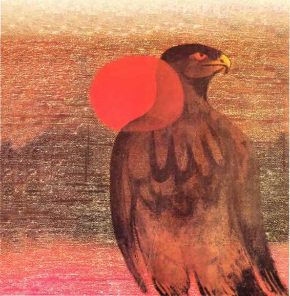
Çağdaş Öğretiler (New Age) Dizisi: 7
)YUNAJANS
©
ürek Taşıyan Yol
KARTAL'IN ARMAGANI
TÜRKÇESi: NURi PLÜMER
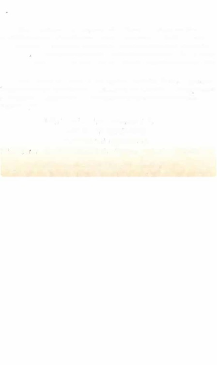
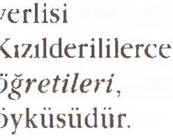
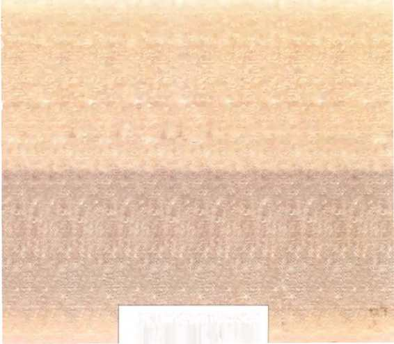
Carlos Castaneda, Los Angeles'daki California Üniversitesi'nde
nsanhilim (antropoloji) dalında uzman bir öğrenciydi. Yaşlı bir Yaqui
olan don Juan'la tanıştığı zaman, Meksika'nın Sonora yöresindeki
kullanılan çeşitli tıbbi bitkileri incelemekteydi. Don juan 'm
bu iki insanın usta ve öğrenci olarak geçirdikleri ilk beş yılın
Carlos Castaneda sonraları, Bir Başka Gerçeklik, I:\tlan Yolculuğu
Yaqui Kızıldereli Büyücüsü Don ]uan 'ın yeni Öğretileri), Erk övküleri
ıe İkinci Erk Çemberi adlı kitaplarıyla bu incelemelerin öyküsünü
;ürdürınüştür
BÜ'ffl\ CANU \ \RUKLARIN KADERİ
KARTAL'I� El,hDEDİR.
KARTAL.iN ARMAGANI
\URTULMA ve ÖZGÜRLÜGE KAVUŞMA FIRSATI DEMEKTİR
Casl.aneda, Meksika"ya geı·i döndiiAünde,
an.ık ersaneleşmlş olan Don .Juan"ın yerini ahnak üzeı·e
topluluğun lideri olarak scçildiğhıi öğı·eniL
�iiyüı·üleı·irı evı·enln gizemli güç.leı·ini tanıma. uysallaştırma
ıe onlaı·dan yararlanabilme cı·kinin peşlnt': diişcn Castancda,
bir kez daha r,ski öğretilerin bilinmez dehşetler'. sannsal
görsüler
ve göz kamaştırıcı içgörülerle dolu dünyasına gir·eı·.
Don Juan'ın anlaşılnıası güç, kuch·etll ve hep onunla
blr·liklc olan ı·uhunun aı·ahksız etkisi alt.ında.
r.astaneda, büyiiciilük sanaı.ının daha da derlnleı·ine iner.
Büyücülüğiin özüne doAı·u bir yoh'uluk
hayal gücünüze vr, mani ığınıza bir· ınt"ydan okuma.
ISBN 975-7190-05-5
1111 1111111111111111111 1111111
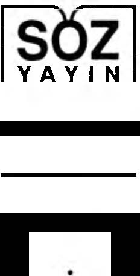
Çağda� Öğretiler (New Agc) Dizisi: 7
Özgün Adı:
THE EAGLE'S GIFT
Copyright © Carlos Castaneda, 1977
Türkiye Temsilcisi Kesim Ajans
Türkiyc'de Yayın Hakkı© 1996 Nevzat Erkmen (SÖZ YAYIN)
Bu Çevirinin Yayın Hakkı© 1996 Nevzat Erkmcn
Editör: Taner Gezer
ÜYUNAJANS
©
Yürek Taşıyan Yol
P.K. 7 Levent
80622 İstanbul
Telefakslar:
(0212) 293 1 o 40
(0212) 244 02 26
ISBN 975-7190-05-5
Birinci Basım
Ekim 1996
Kapak Deseni:
Nemesio Antune z
İç Resimler:
Ra ziye Kubat
Baskı ve Cilt:
Mart Matbaacılık Sanatları Tic. ve San. Ltd. Şti.
İstanbul (0 212) 212 03 39/40-2110971

Carlos Castaneda
Kartal'ın Arınağanı
Çeviri:
NURİ PLÜMER
1. Baskı
ÜYUNAJANS
©
Yürek Taşıyon Yol
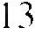
İçindekiler
7
ÖN SÖZ
Bölüm Bir
ÖTEKİ BENLİK
İKİNCİ DİKKATİN SABİ TLEŞ TİRİLMESİ 15
BİRLİKTE GÖRMEK 37
ÖTEKİ BEN LİGİN SANKİ ANILARI 5 9
SEYECENLİÖİN SINIRLARINI AŞMAK 79
ÖFKELİ BİR BÜYÜCÜ ORDUSU 1 03
1 25
Bölüm İki
RÜYA GÖRME SANATI
İNSAN BİÇİMİNiN YİTİRLEMESİ 1 27
BİRLİKTE RÜYı1 GÖRMEK 1 45
SAG YE SOL YAN BiLİNCİ 1 7 1
1 91
Bölüm Üç
KARTAL'IN ARMAÜANI
NAGUAL'IN KURAL! 1 93
NAGUAL'IN SAVAŞÇI TOPLULUGU 2 1 1
NAGUAL KADI!\ 239
SILYIO MANUEL'İN YAPMAMALAR/ 259
R Ü YA GÖRMENİN İNCELİKLERİ 277
FLORINDA 299
SORGUÇLU YILAN 3 3 3
onsoz
Her ne kadar bir insanbilimci olsam da, bu çalı�ma gerçek
anlamda bir insanbilinısel çalışma sayılmaz; yine de kökenleri kültürel insanbilime inmektedir, çünki.i yıllar önce bu disiplin içinde bir alan çalışması olarak başlaırnştı. O yıllarda, güneybatı ve kuzey Meksika' da yaşayan Kızılclerililer arasında tıbbi bitkilerin kullanımı üzerinde incelemeler yapıyordum.
Geçen bunca yıl boyunca araştırmalarım, gerek kazandıkları ivme, gerekse kişisel gelişmem sonucu farklı bir duruma evrildi. Tıbbi bitkiler üzerindeki incelemelerin yerini, en az iki farklı kültürün sın ırlarının ötesine geçen bir inanç
dizgesi üzerindeki incelemeler aldı.
Çalışmalarımın ilgi odağında ortaya çıkan bu deği�imin
sorumlusu, beni daha sonra orta Meksikalı bir Mazatec Kızılderilisi olan Genaro Flores 'le tanıştıran kuzey Meksikalı
Yaqui Kızılderilisi don Jurnı Matus oldu. Her ikisi de, günümüzde genelde büyücülük olarak bilinen w gerek tıp bilimi,
KARTAL' IN ARMA ÔANI
gerekse nıhbilimin ilkel bir biçimi olduğu sanılan, oysa, ger
çekte son derece yüksek özdüzenceli, son derece bilgili uygulayıcılar arasında var olan bir geleneği oluşturan eski bir
öğretinin sürdürücüleridir.
Bu iki adam benim için, birer bilgi kaynağından çok öğretmen oldular; ama ben yine de yaptığım işin, dağınıklığına
rağmen, insanbilimsel bir çalışma olduğunu ısrarla savundum. Bu dizgenin kültürel dayanaklarını belirleyebilmek,
kusursuz bir sınıflandırma yöntemi, sınıflandırıcı bir düzen,
kökenleri ve dağılımı üzerine bir varsayım geliştirebilmek
için yıllarımı harcadım. Ancak, tüm bu uğraşlarım boşunaydı, çünkü sonuçta, dizgenin zorlayıcı içsel erkleri entelektüel
arayışlarımı rayından çıkarttı ve beni de aralarına kattı.
Bu iki erk sahibi adamın etkisi altında, çalışmam bir ya
şamöykiisüne dönüştü; çünkü, aralarına katıldığım andan itibaren, kendimi yaşadıklarımı aktarmaya zorunlu hissettim.
Bu, oldukça farklı bir yaşamöykiisüdür, çünkü burada ne
sıradan bir insan olarak gündelik yaşantımı, ne de gündelik
yaşantımın oluşturduğu öznel durumları aktarıyorum. Bunların yerine, birbiriyle ilişkili düşünceler ve yöntemlerden olu
şan yabancı bir dizgeyi benimsemenin sonucu olarak ya�antıında gelişen olaylar örgüsünü aktarıyorum. Başka bir deyişle, incelemek istediğim inanç dizgesi beni içine çekti ve bütün yaşamımı ona adadım.
İşte bu koşullardan dolayı, yaptığım işin tam olarak ne
olduğunu açıklamak zorundayım. Sıradan bir batılı ya da bir
insanbilimci olarak yola çıktığım ilk noktadan çok uzakta olduğum şu anda, bu çalışmanın bir kurmaca olmadığını yinelemek zorundayım. Burada anlattıklarım bizler için yabancıdır; bu nedenle de gerçekdışı gibi görünmektedir.
Büyücülüğün dolambaçları içinde derinlere indikçe, ba�larda bana ilkel inançlar ve uygulamalar dizgesi gibi görünen şeyler, devasa ve içinden çıkılması güç bir dünya halini aldı. Bu dünyayı tanıyabilmek, onu aktarabilmek ic,;in. giderek artan biçimde karmaşıklaşan ve daha incelikli hale gelen
KARTAL'lN ARi\1AÖANI
yöntemler kullanmak ıoruııd:ıyıııı. Baııa olaıılar. ne beııim
öııcedeıı kestirebildiğim tiinlcıı geli�ım:lcr. ııe de diğer insanbiliıııcilcriıı Meksikalı Kmlderilileriıı iııarn,; dizgeleri üzeriııe
bildiklcriııe beııziyor. SoıılJ(,; olarak. kcııdiıııi gü\· bir durumda hissediyonını: bu ko�ullar altıııda y:ıpabilcii,0.iın tek �ey,
bana olaııları, old11.�11 gihi yaıısıtııı:ık. İyi ııiyetiın koııusuııda,
ikili bir ya�aııııııı olıııaclığıııı VL' keııdiıni doıı Juaıı'ııı dizgesiııin ilkelerini uygulaıııaya adaıııı� olduğumu bir kez daha
vurgulaınaııııı ötesinde lıerh:ıngi bir giiveııcc vereıııeyecc
ğiın.
Bana eğitmenlik yapan :Vkksikalı Kızılderili büyücüler,
don .Juan Maıus w don ()cnarn Florcs. bilgilerini keııdileriııce yeterli gördükleri ölçiide hana a\·ıkLıdıkt:ın sonra. eyvallah deyip \·ekip gittiler. Ban:ı dii�en giirevin. o andaıı itibaren, onlardan öğrendiğim bilgileri kL·ııdi <_·;ıbaıııla bir araya getirmek olduğ:uııu aııladıııı.
Bu görevi yerine getirmek iizere 1,--:ılı�ınaLıra ha�lanıak
içiıı :Vkksika'ya geri döııdüğliıııde don Ju;ın w doıı Gcnaro 'ııun bqi kadın diirdii erkek dokuz \·iiıııeziııin daha buluııduğuııu ke�fcllinı. KadıııLırın en y:ı�lısıııııı adı Soleclad'clı.
Bir diğeri '·La (lorda·· takıııa adlı :vlaria Elcna'ydı: diğer üç
kadııı, Lydia. Rosa w Juscfin;ı d:ılıa gen<_·tiler ve ""Küçiik kız
karclc�lcr" oLırak :ınılıyorlardı. Dört adamın adlarıysa, ya�
.sırasına göre Eligio. Benigırn. NL·stor VL' Palılito'ydu: son
saydığım üçiiııc. doıı Geııaro ·ya \'Ok yakııı oldukları için
··c;enarolar" deniliyordu.
'.\lesıur. Pablito ve ;ırıık orada olıııayaıı Eligiu'ııun 1,-·ii
ınez olduklarıııı bıliyorduııı ı:ıLL·ıı. aııı:ı llL·r ııedense dört kı
ıııı Pablito · ııuıı kız k:ınle�lcri. Suk'dad' ııı.-,;ı oıılarııı aııaları
olduğuııa inanını�tını. Ce<,·eıı yıllar buyunca Solcdad'ı az çok
t;11ıııııı�tıııı, ya�ça don Juaıı ·a yakın olduğu ı\·iıı bir saygı ifadesi olarak ona lıcr zaıııaıı d(}/iu Solcdad �eklinde lıitap ederdim. Beııigııo'yu tanırdım aııı:ı unun dun Ju;ııı ve don Geııarn ile ili�kisiııdeıı lıiç lıaberiııı ulıııaıııı�tı.
Aıılayaınadığıın ııcdeıılerdeıı dolayı lıepsi de. �u ya da
KARTAL' I N ARMAGAN I
bu şek ilde benim M e k sika ' ya geri dönmem i bekl iyor g ib iy diler. B ana , onların l iderleri, Nagualları ola rak don Juan 'ın
yerin i almamın beklend iğ in i b ildird iler. Don Juan ' la don Ge
ııaro ' n u ıı d a El i g io ' n u n d a bu d ü n yadan u çup gitt ik l e r in i
söyled ile r. B u ü ç k iş in in öldüğüne inanmıyorlardı; onlar, ya
�adığımız dünyadan fark l ı , am a aynı ölçüde ge rçek başka b ir
dünyaya g irm iş lerd i.
K adınlarla-özel l ik l e do iia Soledad ' l a- ilk k arş ı l aştığımız andan iti baren sürekl i ters düştük. A ncak, y ine ele d inginl qmcrne yardımcı oldular. Onlarla k u rduğum i l iş k i, yaşamımda g izeml i b ir c o şk u n u n doğm asına yol açt ı . B irl ikte yaşadı kl arı m ı z , düşünce v e k avray ı ş b iç im imde çok büyük
değ iş imler getird i . Ama, tüm bun lar bil inç düze y inde gerçeklqrn iyordu-ya da en azınd a n, onları ilk ziyaretimden sonra
zihnim i her zamank inden daha faz la karı şm ı ş buldum; y ine
ele bu kargaşan ı n içinde, ş aşırtıcı ö l çüde sağl am b ir zem in
vardı . B u çatışmaların etk is iy l e , ken d imde o güne değ in var
oldukları n ı düşlerimde b ile görmediğ im yetenekler k qfett im .
La Gorcla ve k ü ç ü k k ı z k arde şl er kus ursuz b irer diiş gijriiciiydii/er; kend i arwl arıyla bana yol gösteric i b ilgiler verd il e r ve b ec e r il e r in i g ö s t e rd i l e r. D o n J u a n diiş giirmc sanatın ı , k iş in in kendi olağan düşlerinden yararl anma, onun
ve don Gcnaro ' nu n ikinci dikkat adıı ıı verd ikleri uzman l ı k
gerekt iren b i r d ik k at türü arac ı l ı ğ ı y l a /.:.ontmllii fôr/.:.111dalı.�a
dönüştüre b ilme potans iyel i ol arak tanımlam ı ştı.
G e n a r o l a r d a n , don Ju a n ' ın v e d o n G e n aro ' n u n öğret ilerin in bir d i ğe r yönünü oluşturan i:: siirme sanatındak i
başarı l ı uygulamalarını bana öğretmelerin i bek l iyordum. /::
siirnıe sanatı bana k iş i n in a k l <ı gelen h e r durumda e n iy i
sonuçl arı elde edeb ilmes in i sağlayan b ir d iz i yöntem o l a rak
anlatılımştı . Ancak, Genaro ların i: siirme üzerine bana anlattıkları , ben im bek le d iğ im tut arl ı lı ktan y a da erkten yoksundu. B u adamlar, y a gerçe k anl amda bu s an atın uygulayıc ıl arı değ il lerd i, ya da hu sanatı bana göstermek istem iyorlard ı .

Kendilerini hcniııı vaııııııda ı:ılı;ıt lıissL'lkbilıııekri ıçm
soru�ıurınaLırınıa ara vcrdiııı. ;ııııa oıılar sah:iıı sah:iıı oturdular ve artıh: lıi\· soru -;orııı�ıdığııııa giirL' nı sununda bir
Nagu;ıl gibi davraıııııay<ı b<ı.�Lıdığıııı<ı inandılar. HL:psi de
bcııiın kılavuzluğuıııu ve iiğiitkrimi hckliyurbrdı.
Bdlcntilniııc uygun d<ıvr<ıııabilıııd, İ\·iıı. doıı Ju;ın ve
don Geııaro·nuıı han;ı iığrL'ıtil-;kriııi ba�tan .suıı;ı giiıdcıı
gcçirıııcl-;, htiyliclillik .s<ıı1atıııın dcriıılcriııc iıııııck zoruııd;ıydıııı.
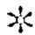
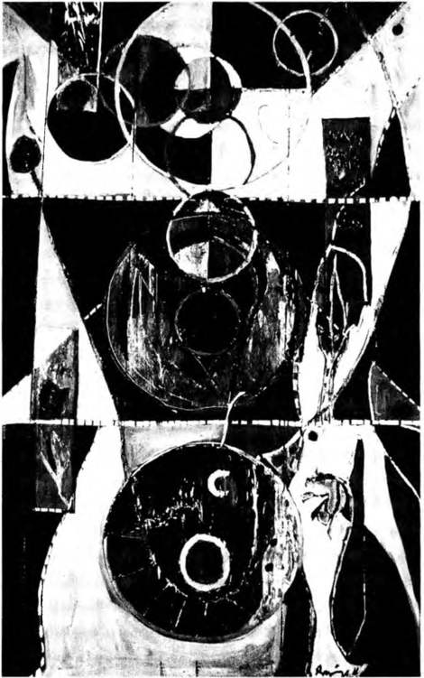
Bölün1 Bir
Öteki Benlik
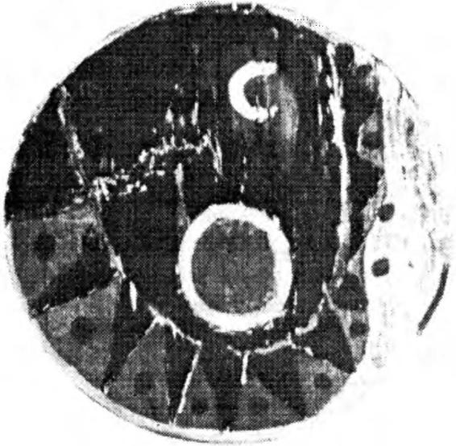
İ KİNCİ Dİ K KATİN SABİTLEŞTİRİUvlESİ
L a Gorcb
ğımda ve kü�·ük
ikindi
kız k;ınk.)lcrin
üzeriydi. La Gorda ya�;ıdıkları
giizlcrini
yerL' vardıuı.aktaki dağlara dikrni�. tek ba�ıııa, kapının iiniindc oturuyordu. Beııi göri.ince çok �a�ırdı. ()eçıııi�te ya�adığı bir �eyiıı aııısıııa daldı
ğını ve beniııılc ilgili belli belirsiz bir �eyi aıııııısaın;ık iiı.crc
olduğunu açıkladı.
Aynı gece, yemekten sonraki gL\' biı· saatte. la Gorda.
küçük kız kardqlcr. Genarnlar ve ben. Lı Ciord;ı 'ııın odasında, yerde oturuyorduk. Kadınlar yatı yaııa uturıııu�lardı.
Buradakilerin lıcr biriyk ;ıynı .�ürckrdc birlikte olmama
kar�ın, ııeckıısc la Gor da'ııın bcııiııı i�·iıı ;ıyrı bir yeri vardı.
Öbürlerini gözüııı görıııliyurdu. L3clki de bunuıı ııedeni, la
Gorcla'ııııı. diğerlerinden farklı ular;ık. ban;ı doıı Juan'ı
anımsatırnısıydı. Onda bir ralıatlık vardı. aııı;ı bu rahatlık.
onun davranı�larındaıı çok beniııı ona kar�ı olan duyt-1-ularııııdayclı.
Çömezlerin hepsi neler yapını� olduğuıııu öğrenmek istediler. Onlara Hidalgo'claki Tula kentine cblıa yeııı gittiği-
1 6
ÖTEKİ BENLİK
mi, oradaki ören yerini gezdiğimi söyledim. Orada beni en
fazla etkileyen şey, bir piramidin düz tepesinin üzerinde yan
yana, sütun gibi yükselen, "Atlantisliler" denilen anıtsal dört
figür olmuştu.
Her biri dört buçuk metre yüksek! iğinde ve doksan santim genişliğinde olan bu silindir biçimli figürler, Üzerlerinde.
arkeologların tahminlerince, savaş gereçlerini taşıyan Toltec
savaşçılarını betimleyen oymaların bulunduğu dört ayrı siyah mermer parçasından oluşuyordu. Piramidin tepesinde ,
öndeki figürlerin her birinin yaklaşık altı metre gerisinde. yine dört ayrı parça taştan yan yana sıralanmış, öncekilerle aynı boyutlarda dört dikdörtgen sütun daha vardı.
Atlantislilerin insana ürküntü veren bu mekanların ın etkisi, gezintim sırasında bana rehberlik eden arkadaşın aktardıklarıyla daha da yoğunlaştı. Örenin bekçisi ona, Atlanıislilerin geceleri yeri sallayarak gezindiklerini işiıtiğini anlatmış.
Genarolara arkadaşımın bana söylediklerini aktararak ııe
düşündüklerini sordum. Utangaç bir biçimde kıkırdadılar.
Hemen, yanımda oturan la Gorda' ya döndüm ve onun fikrini
sordum. "O desenleri hiç görmedim," dedi. 'Tula'ya hi<,; gitmedim. Oraya gitme fikri bile beni ürkütüyor. "
"Neden ürkütüyor seni, Gorda?"
"Oaxaca 'daki Monte Al ban Kalıntıları' nda başıma bir
şey geldi," diye yanıtladı sorumu. "Nagual Juan Matus bana
oralara adımımı atmamamı öğütlemiş olduğu halde, kalıntılardan ayrılamazdım. �edendir bilmem, orayı çok sever, Oaxaca 'ya her gidişimde, öreni de görmeden edemezdim. Bir kadın için yalnız gezmek tehlikeli olduğu için yanıma Pablito 'yu alırdım. Ancak bir keres inde Nestor'la g:iıtim. \lcstor
yerde bir parıltı g/irdii. Toprağı biraz eşeleyince, avucuma sı
ğacak büyüklükte tuhaf bir kaya parçası bulduk: içine doğru
düzgünce bir delik oyulmu�tu. Parmağımı bu delikten içeri
sokmak istedim ama Nestor beni engelledi. Pürüzsüz bir ytizeye sahip bu kaya parçası adeta elimi yakıyordu. Onunla ne

İKİNCİ DİKKATİN SABİTLEŞTİRİLMESİ
1 7
halt edeceğimizi b ilemedi k . N estor onu şapkas ının ıçıne
koydu ve canlı bir hayvanmış gibi taşıdık.
Herkes gül meye başladı. Sanki la Gorda'nın anlattıklarında gizli bir alay vardı.
"Taşı nereye götürdünüz?" diye sordum.
"Buraya, bu eve getirdik," diye yanıt verdi ve onun bu
sözleri öbürlerinde engel olamadıkları bir kahkaha nöbetine
yol açtı. Kasıklarını tuta tuta gülüyorlardı.
"La Gorda'ya gülüyorlar," d iye açıkladı Nestor. "Anlamış olmalısın , ondaki katır inadı hiçbirimizde yok. Nagual
ona çevredeki taş, kemik pan;alarını ya da toprağa gömülü
olarak bulabileceği şeyleri kurcalamamasını söylemişti . Ama
o, hiç söz dinlemez, bulduğu her tür ı vır zıvırı gizl ice alırdı.
"O gün ele Oaxaca 'ela o allahrn cezası şeyi taşımakta diretti . O kaya parçasıyla otobüse bindik ve onu ta buralara, bu
odaya kadar getirdik."
'"Nagual ve Genaro yolcul uğa çıkmışlardı," dedi la Gorda. "Cesaretimi toplayarak parmağımı del iğe soktum ve kaya parçasının elde taşınacak biçimde oyulmuş olduğunu fark ettim. O an, o kaya parçasını daha önce tutan her kim idiyse
onun h issettiklerini duyumsadım. O bir erk taşıydı. Ruh halim değişiverdi birden. Korkmuştum. Karanlı kta korkunç bir
şey sinsi sinsi dolaşıyordu, biçimsiz, renksiz bir şey. Yalnız
kalmaktan korkar oldum. Uykumun orta yerinde çığlık ç ığlı
ğa uyanıyordum, kısa süre sonra da gözümü kırparnaz hale
geldim. Gece gündüz, nöbetleşe başımda durarak bana göz
kulak olmak zorunda kalmışlardı."
''N agual ve Genaro geri döndüğünde," diyerek bu kez
Nestor sürdürdü konuşmayı: "Nagual, Genaro'yla beni kaya
parçasını daha önce gömülü olduğu yere geri koymaya gönderdi. Genaro o noktayı bulabi lmek için üç gün uğraştı. Üç
günde anca buldu."
'"O olaydan sonra sana ne oldu Gorda'I" diye sordum.
"Nagual beni gömdü," dedi. ·'Dokuz gün, <,,·aımırclan bir
18
ÖTEKİ BENLİK
tabutun içinde çırılçıplak yattım."
Bir kahkaha fırtınası daha patladı aralarında.
"Nagual ona tabutun içinden çıkamayacağını söyledi,"
diye açıkladı Nestor. Zavallı Gorda tabutun içine işemek ve
sıçmak zorundaydı. Nagual onu, dallardan ve çamurdan yaptığı bir kutunun içine tıktı. Kutuda, yemek ve su vermeye yarayan küçük bir delik vardı sadece, diğer bölümleriyse mühürlenmişti."
"Neden gömdü onu?" diye sordum.
· "Birini korumanın tek yolu budur," dedi Nestor. "Topra
ğa gömülmesi gerekiyordu ki, toprak onu sağaltsın. Topraktan daha iyi sağaltıcı yoktur; ayrıca, Nagual kaya parçasının
la Gorda üzerinde od;ıkladığı duyguyu kovmak zorundaydı.
Çamur, bir paravan gibi, bir şeyin iki tarafa da geçmesini engeller. Nagual onun gömülü kalarak iyileşebileceğini biliyordu. Nitekim öyle de oldu."
"Öyle gömülü kalmak nasıl bir duyguydu, Gorda?" diye
sordum.
"Çıldırmak üzereydim," dedi. "Ama kendi düşen ağlamaz. Nagual beni gömmeseydi ölebilirdim. Taşta bulunan
erk benim için çok fazlaydı anlaşılan; asıl sahibi iriyarı bir
adammış. Eli benimkinin en az iki katı olsa gerek. Bu taşı
tatlı canını korumak için taşıyormuş, ama sonunda biri öldürmüş onu. Duyduğu korku beni dehşete düşürdü. B an a
doğru, etimi yemek üzere b i r şeyin geldiğini hissettim. B u ,
adamın korkusuydu. Erk sahibi bir adammış, ama ondan daha erkli biri onu yenmiş.
"Nagual' ın anlattığına göre, insan bir kez böyle bir nesneye sahip olunca felaketler peşini bırakmazmış, çünkü sahip olduğu erk aynı türden başkalarıyla ç atışır ve erkin sahibi ya avcı olurmuş ya da kurban. Nagual savaşın bu tür şeylerin doğasında var olduğunu söyler, çünkü dikkatimizin erk kazandırmak üzere onların üzerinde yoğunlaşan bölümü, çok
tehlikeli, saldırgan bir bölümmüş."
"La Gorda çok açgözlü," dedi Pablito. "Eğer bir erk nes-
İKİNCİ DİKKATİN SABİTLEŞTİRİLMESİ
19
nesi bulabilirse, bugünlerde kimse erke meydan okumak istemediği için, karlı çıkacağını sanıyordu."
La Gorda söylenenleri onaylar biçimde başını salladı.
"Kişiye nesnelerde bulunan erkin yanı sıra başka şeylerin de bulaşabileceğini bilmiyordum," dedi. "Parmağımı del ikten içeri sokup taş parçasını tuttuğum an elim ateşler içinde kaldı ve koluma bir titreşim yayıldı. Kendimi gerçekten güçlü ve ipiri hissediyordum. Sinsice hareket ettiğimden, taşı
elime aldığımı hiç kimse anlamadı. Ama asıl felaket birkaç
gün sonra başladı. B irinin taşın sahibinin peşinde olduğunu
duyumsuyordum. Taşın sahibinin korkusunu ben de yaşıyordum. Kuşkusuz, çok erkli bir büyücüymüş ve peşindeki de
onu öldürmekle kalmayıp, onu diri diri yemek istiyormuş.
Bu da benim ödümü koparıyordu. Taşı o an fırlatıp atmalıydım ama bana verdiği duygu benim için öylesine farklıydı ki
onu delicesine, sıkı sıkıya kavramıştım. Sonunda onu attı
ğımdaysa artık iş işten geçmişti. İçime bir şeyler saplanmı ştı.
Tuhaf giysiler içinde birtakım adamların üzerime doğru geldiği bir görsüydü bu. Beni ısırdıkları nı , küçük keskin bıçaklarla ve dişleriyle bacaklarımdan etler koparttıklarını hissediyordum. Dehşete düşmüştüm!"
"Bu görsüleri don Juan nasıl açıklıyordu?" diye sordum.
"Savunma gücünü tümüyle yitinni ş olduğunu söyledi,"
dedi Nestor. "Bu yüzden de adamın kaya parçasına yönelttiği
sabitlenmeyi, onun ikinci dikkatini kapmış. Adam öldürülürken yoğunlaşabilmek için kaya parçasına tutunmuş. Nagual,
adamın erkinin bedeninden taşa geçtiğini söylemişti; erkinin
onu parçalayıp yiyecek olan düşmanlarına geçmesini istemediği için böyle yapmış. Nagual, onu öldürenlerin de bunun
farkında olduklarını, bu nedenle de erkinden geride kalanları
elde edebilmek için onu diri diri yediklerini söyledi. Kayayı
da beladan kurtulmak için gömmüş olmalılar. Ve l a Gorda'yla ben, iki budala, taşı bulduk ve gömülü olduğu yerden
çıkarttık. "
L a Gorda başını onaylarcasına ü ç dört kez salladı. Yü-
20
ÖTEKİ BENLİK
zünde çok c iddi bir ifade vardı.
"Nagual bana ikinci dikkatin var olan en şiddetli erk olduğunu söylem işti," dedi. "Hele nesneler üzerinde yoğunlaşmasından daha korkunç bir şey olamazmış".
"Asıl korkuncu, yapışıp kalmamız," dedi Nestor. 'Taşın
sahibi de yaşamına ve gücüne sımsıkı sarılmış; bu yüzden
etinin diri d iri yenmesi onu dehşete düşürmüş. N agual 'ın
söylediğine göre, canına böylesine düşkün olmasaydı, kendini ölüme teslim etseydi, ne olursa olsun, içinde herhangi bir
korku kalmazmış."
Konuşma sona erdi. Öbürlerine dönüp, söyleyecek bir
şeylerinin olup olmadığını sordum. Kız kardeşler yüzüme
baktılar. Benigno kıkırdadı ve yüzünü şapkasıyla örttü.
"Pablito ' yla birlikte Tula piramitlerine gitmiştik," dedi
sonunda. Meksika' daki tüm piramitleri gezdik biz."
"Neden gittiniz bütün piramitlere?" diye sordum.
"Neden gittiğimizi bilmiyoru m aslında. Belki de Nagual
Juan M atus gitmememizi söylediği içindir."
"Ya sen, Pablito?"
"Ben öğrenmek için gittim," dedi sinirli bir biçimde ve
güldü. "Tula şehrinde yaşardım. O piramitleri avucumun içi
gibi bilirdim. Nagual bana kendisinin de bir zamanlar orada
yaşamış olduğunu söyledi . Piramitler hakkında her şeyi biliyordu. O da bir Toltec 'di."
O anda Tula' daki arkeolojik bölgeye gitmemin merakın
ötesinde bir nedeni olduğunu anladım. Arkadaş ı m ın davetini
kabul etmemin asıl nedeni, la Gorda ve diğerlerinin ilk ziyaretimde bana, don Juan 'ın daha önce hiç sözünü etmediği bir
gerçeği , kendisini Tolteclerin kültürel mirasçısı olarak gördüğünü söylemeleriydi.
"Atlantislileri n geceleri bölgede dolaşmaları hakkında
ne düşünüyorsun?" diye sordum.
''Elbette dolaşıyorlar," dedi. "Asırlardır oradaydılar. Piramitleri kimin yaptığı bilinmiyor. B izzat Nagual Juan Ma-
İKİNCİ DİKKATİN SABİTLEŞTİRİLMESİ
2 1
tus bana oral arı ilk kqfedenlerin İspanyol lar olmadığın ı ,
oralarda onlardan önce de birilerinin bul unduğunu söylüyordu."
"O dört taş figür sence neyi simge l iyor?" diye sordum.
"Kadınları," diye yanıt verdi. "O piramit, düzenin ve kalıcılığın merkezidir. Figürler de piramidin dört köşesini; dört
rüzgarı ve dört yönü simgelerler. Onlar piramidin temeli, zeminidir. Kesinlikle kadın onlar, erkeksi kadınl ar da denebil ir.
B ildiğin gibi, biz erkekler o denli ateşli değiliz. İyi birer birleştirici, nesneleri bir arada tutmaya yarayan bir zamk gibiyiz, ama hepsi bu. Nagual Juan Matus, piramidin gizeminin yapısından kaynaklandığını söyledi. Piramidin kendisi, dört
köşes inden tepeye doğru yükselmiş dişi savaşçılar tarafından
desteklenen bir erkektir, kendisini destekleyenleri yücelten
bir erkek. Anlıyor musun?"
Yüzümde şaşkın bir ifade bel irm iş olmalı ki, Pabl ito
güldü. K ibar bir gülüştü bu.
"Hayır, anlamıyorum Pablito," dedim. "Çünkü don Juan
bana bu konuda hiçbir şey söylemedi . Bu konu bana tümüyle
yabancı. Lütfen bana bütün bildiklerin anlat".
"Atlantisliler nagualdır; riiya göriiciilerdir. İkinci dikkat
düzeninin temsilcisidirler. İşte bu yüzden böylesine korkunç
ve gizeınlidirler. Onlar savaşçı yaratıklardır; ama yok edici
değil.
"Öteki sütun sırası, dikdörtgen olanlar birinci dikkati,
ıonalz temsil eder. Onlar, iz sürücüdür, bu yüzden Üzerlerinde yazıtlar vardır. İlk sıradakilerin aksine, çok barışçı ve bilgedirler."
Pablito konuşmasını kesti, bana arsızca baktı ve sırıttı.
Açıklamalarını sürdüreceğini düşünüyordum, ama o yorumlamamı beklercesine sustu.
Çok etkilendiğimi söyledim ve anlatmaya devam etmesi
için ısrar ettim. Kararsız gibiydi, bir an yüzüme baktı ve derin bir soluk aldı. Tam konuşmaya başlamıştı ki ötekilerden,
lafını ağzına tıkan bir gürültü yükseldi.

22
ÖTEKİ BENLİK
" Nagual bunu hepimize açıklamıştı zaten," dedi la Gorda sinirli bir biçimde. "Ona tüm bunları yineletmenin ne anlamı var?"
Onlara Pablito'nun anlattıkları hakkında h içbir bilgim
olmadığını anlatmaya çalıştım . Onu tam açıklamalarını sürdürmesi için razı etmiştim ki bir gürültü daha koptu. B ana
bakışlarından, küçük kız kardeşlerin öfkelenmeye başladıklarını fark ecliyorclum , özellikle ele Lydia' nın.
"O kadınlar hakkında konuşmaktan hoşlanmıyoruz," dedi la Gorda ortalığı yatıştırmaya çalışır bir tonda. "Piramitteki kadınlar düşüncesi bile bizi sinirlendiriyor. "
" Neyiniz var sizin?" diye sordum. "Neden böyle davranıyorsunuz?"
"Bilmiyoruz," diye yanıt verdi la Gorda. "Bu , hepimizde
var olan çok rahatsız edici bir duygu. B iraz önceye elek, sen
bu kadınlar üzerine sorular sorana kadar, hepimizin keyfi yerindeydi."
La Gorda'nın sözleri yaklaşan tehlikenin habercisi gibiydi. Hepsi ayağa kalktı ve bağıra çağıra üzerime yürüdüler.
Onları yatıştırmak ve yerlerine oturtmak oldukça zamanımı aldı. Küçük kız kardeşler çok sıkıntılı görünüyorlardı
ve onların bu durumu la Gorda'yı da rahatsız etmişti. Erkekler daha sakindiler. Ne stor' a döndüm ve açık açık ondan kadınların huzursuzluğunun nedenini söylemesini istedim. Farkında olmadan onları sinirlendirecek bir şey yapmış olmalıydım.
"Gerçekten bilmiyorum ne olduğunu," dedi. "Eminim
buradakilerin hiçbiri de, çok üzgün ve sinirli olduğumuz hariç, bize ne olduğunu bilmiyor"
"Piramitler hakkında konuştuğumuz için olabil ir mi'I"
diye sordum.
"Öyle olmalı," dedi karamsar bir tonda. "O figürlerin
kadın olduğunu ben de bilmi yordum."
"Elbette biliyordun, seni aptal," diye atıldı Lydia.
İKİNCİ DİKKATİN SABİTLEŞTİRİLMESİ
23
Nestor onun bu çıkışından ürkmüş görünüyordu. Sindi
ve utangaç utangaç bana gülümsedi.
"Belki de biliyordum," dedi. "Yaşamlarımızın çok tuhaf
bir dönemine girdik. Artık hiçbirim iz ne bildiğimizden emin
değiliz. Sen yaşamlarımıza girdiğinden beri kendi kendimizi
tanıyamaz olduk. "
Çok ağır bir hava çökmüştü birdenbire. Bu havayı dağıtmanın tek yolunun, piramitleri n üzerindeki o gizemli sütunlar hakkında konuşmak olduğunu söyledim ısrarla.
Kadınlar buna şiddetle karşı çıktı. Erkekler sessiz kaldı.
Sanırım kadınl arı karşılarına almak istemiyorlardı, ama içten
içe, tıpkı benim gibi, bu konuyu tartışmak istiyorlardı.
"Don Juan piramitler konusunda sana başka bir şey söyledi mi Pablito?" diye sordum.
Amacım, konuşmayı özell ikle Atlantislilerden başka bir
yöne çekiyor görünüp belli etmeden aynı konu hakkında konuşmaktı.
"Tula'daki piramitler arasında özell ikle birin in yol gösterici olduğunu söylemişti," diye yanıt verdi Pablito, konuşmaya hevesli bir sesle.
Ses tonundan konuşmaya can attığı sonucuna vardım.
Öteki çömezlerin de aramızdaki konuşmaya kulak kabarttıklarını görünce, tümünün de bu konuda görüş alış verişinde
bulunmak istediklerinden emin oldum.
"Nagual onun bir zamanlar ikinci dikkat için bir yol gösterici olduğunu söylemişti," diye sürdürdü konuşmasını Pablito, "ama daha sonra yağmalanmış ve her şey yok edilmiş.
Nagual bana piramitlerin bazılarının devasa yapmama/ar olduklarını söyledi. Buraları yaşam alanları değil, savaşçıların
rüya görmelerini gerçekleştirdikleri ve ikinci dikkatlerini uyguladıkları yerlermiş. Yaptıkları her şey, duvarlarda yer alan
çizimler ve figürlerde kaydedilmiş.
"Daha sonra piramitlerdeki büyücülerin 'ikinci dikkatleriyle yaptıklarından hoşlanmayan, bu yüzden piramitlere
24
ÖTEKİ B ENLİK
içindekilerle birlikte zarar veren başka savaşçılar gelmiş olmalı.
"Nagual, yeni savaşçıların da kendisi gibi üçüncü dikkatin savaşçıları olduğuna inanıyordu; ikinci dikkatin sabitleşmesinin kargışından dehşete düşen savaşçılar. Piramitlerdeki büyücüler, sabitleştirme üzerine kendilerinden geçecek ölçüde yoğunlaşmışlar. Ne olduğunu anladıklarındaysa artık iş
işten geçmiş."
Pablito ' nun çev resinde bir dinleyici grubu oluşmuştu.
Odada bulunan herkes, ben de dahil olmak üzere, anlattıklarını ağızları açık dinliyorlardı. Aktardığı fikirleri anlamakta
güçlük çekmiyordum, çünkü don Juan bunları bana daha önce açıklamıştı.
Don Juan, bir bütün olarak varoluşumuzun algılanabilen
iki bölümden oluştuğunu söylemişti. Bunların birincisi, hepimizin algılayabildiği cismani beden; ikincisi ise, yalnızca
görücülerin algılayabildiği, bizlere devasa saydam yumurtalar görünümünü veren bir koza olan saydam bedenmiş. Don
Juan ' ın söylediğine göre, büyücülüğün en önemli amaçl arından biri de bu saydam kozaya ulaşabilmekmiş; bu amaç, riiya görmenin incelikli bir biçimde kullanımı ve onun yapmama adını verdiği, oldukça titizlik gerektiren dizgesel bir uygulamayla gerçekleşirmiş. Don Juan yapmamayı tüm varolu
şumuzu, saydam kısmının farkına varmaya yönelten alışılmadık bir eylem olarak tanımlamıştı.
Bu kavramları açıklamak üzere don Juan bilincimizi gelişigüzel üç bölüme ayırmıştı . B u bölümlerin en küçüğüne
birinci dikkat adını veriyordu. Bunun her normal insan tara
·
fından gündelik yaş amla başa çıkabilmek üzere geliştirilen
bilinç olduğunu ve cismani bedenin farkındalığını kapsadığını belirtmişti. Daha geniş olan ve ikinci dikkat adını verdiği
bölümü, saydam kozamızı algılayabilmemiz ve saydam varlıklar olarak davranabilmemiz için gerek duyduğumuz farkındalık şeklinde tanımlamıştı. Söylediğine göre saydam bedenin farkındalığını kapsayan ikinci dikkat, özenli bir eğitim
İKİNCİ DİKKATİN SAB İTLEŞTİRİLMES İ
25
süreciyle ya da ani bir sarsıntı sonucu ortaya çıkmadığı sürece yaşamımız boyunca geri planda kalırırn ş. Bil incim izin en
büyük parçasın ı oluşturan son bölümeyse üçüncü dikkat adını veriyordu; bu, cismani ve saydam bedenlerimizin farkındalığının, tanımlanamaz özelliklerini kayna�tıran sınırsız bil inçıniş.
Don Juan ' a, kendisinin üçüncü bilince il işkin herhangi
bir deneyimi olup olmadığını sormuştum. Bana, bu bilincin
sınırlarında dolaştığını , eğer bu boyuta girmiş olsaydı, bunun
o anda farkına varmış olabileceğimi, çünkü böyle bir durumda tüm varlığının gerçek özüne, yani bir enerji patl amasın a
dönüşeceğini söylemişti. Savaşçılarını n dövüştükleri alanlar,
üçüncü dikkate ulaşabilmek için bir tür eğitim nitel iği taşıyan ikinci dikkatmiş. Ulaşılması oldukça güç, ama bir kez
u laşı ldıktan sonra son derece verimli olan bir duruımmış bu.
''Piramitler zararlıdır," diye sürdürdü konuşmasını Pabl ito. "Özell ikle bizim gibi korunmasız büyücüler için. La Gorda gibi biçimsiz savaşçılar içinse çok daha beter. N agu<ıi, ikinci dikkatin şeytanca sabitlqmesinden daha tehlikel i bir
şey olmadığını söylemhti. S avaşçılar ikinci dikkatin zayıf
yanı üzerinde odaklanmayı öğre ndikten sonra , karşıları na
h içbir güç çıkamazmış. Birer insan avcı sı, birer gulyabani
olup çıkarlarmış böylece. Yaşıyor olmasalar bile, şimdi ve
burda bulunuyormuşçasına, avlarına ulaşırlarmış. Piramitlerin içine girecek olursak biz de onların kurbanları olurımı
şuz. N agual bunlara ikinci dikkatin tuzakları derdi."
"Nagual tam olarak ne olacağını söyledi?" diye sordu la
Gorda.
"Nagual, piramitleri bir kez görmeye belki dayanabileceğimizi söylemişti," dedi Pablito. "İkinci keredeyse tuhaf
bir hüzün kaplarmış benl iğimizi. B izi, rüzgar yemiş gibi halsiz ve bezgin hir hale sokarmış. Bu bezginlik kısa sürede de
yerini art arda gelen uğursuzluklara bırakırmış. Lanetlenmiş
olduğumuzdan başımıza gelmeyen kalmazmış. Aslında, N agual bu uğursuzluğun onun öğütlerine kulak asmadan kalın-
26
ÖTEKİ BENLİK
tıları gezmeye heveslenmemizden kaynaklandığını söylemişti.
"Örneğin Eligio, asla Nagual 'ın sözünden çıkmadı . Bu
nedenle de kalıntılarda ne onun ne de bu Naugal ' ın ölüsüne
rastlayamayacaksınız; onlar hep şanslıydı, oysa biz uğursuzluklardan yakamızı kurtaramadık, özellikle de la Gorda ve
ben. Aynı köpek tarafından mı ısırılmadık! Mutfağın tavanındaki kalaslar çürüyüp ikimizin üzerine birden mi düşmedi! "
"Nagual bunları bana h iç anlatmamıştı," dedi l a Gorda.
"Elbette anlattı," diye diretti Pablito.
"Ne kadar uğursuz olduğunu bilseydim, o allahın belası
yerlere adımımı atar mıydım hiç?" diye çıkıştı la Gorda.
"Nagual her birimize aynı şeyleri söylemişti," dedi Nestor. "Sorun, hepimizin onu aynı dikkatle dinlemiyor olmasın da, daha doğrusu herkesin kendi işine geldiği gibi dinleyip, duymak istediklerini duymasında.
"Nagual, ikinci dikkatin yoğunlaştırılmasının iki yüzünün olduğunu söylemişti. Birinci ve en basiti kargışlı olanıymış. Bu, rüya görücülerin kendi rüyalarını para, insanlar üzerinde erk edinme gibi dünyevi işler üzerinde yoğunlaştırdıklarında ortaya çıkarmış. Öteki yüzün elde edilmesi daha
zormuş; rüya görücülerin ikinci dikkatlerini, bilinmeyene
yolculuk gibi, bu dünyadan olmayan işlerde yoğunlaştırdıklarında ortaya çıkarmış. Savaşçıların bu yüze ulaşabilmeleri
için sonsuz bir kusursuzluğa sahip olmaları gerekirmiş."
Onlara don Juan' ın hepimize farklı farklı şeyler anlattı
ğından emin olduğumu söyledim. Örneğin, don Juan'ın bana
ikinci dikkatin kargışlı yüzü hakkında bilgi verdiğini hiç
anımsam ıyordum. B unun üzerine oradakilere, don J uan 'ın
genel anl amda dikkatin yoğunlaştırılması konusunda bana
anlattıklarını aktardım.
Don Juan bana, Meksika' daki tüm arkeolojik kalıntıların
özellikle de piramitlerin, modern insan için zararlı olduğunu
vurgulamış, piramitleri, düşünce ve eylemin farklı dışavu-
İKİNCİ DİKKATİN SABİTLEŞTİRİLMESİ
27
rumları olarak betimlemişti . Söylediğine göre içlerindeki her
unsur ve desen, bizler için tümüyle yabancı bir dikkatin çe
şitli yönlerini kaydetmeye yönel i k tasarlanmış çabalarmış.
Don Juan 'a göre, bunlar yalnızca geçmiş kültürlerin kalın tıları olmakla kalmı yor, aynı zamanda içlerinde tehl i keli bir
unsuru da barındırıyorlardı; saplantı yaratan her ilgi nesnesi
zararlı bir potansiyel içermekteydi .
B i r keresinde bu konuyu ayrıntılı bir biçimde tartışmıştık. Tartışmamız, tuttuğum notları em in bir şekilde nasıl saklayabileceğim konusunda bir türlü karar veremediğimi söylediğimde bana gösterdiği tepkiden kaynaklanmıştı . Notlarıma son derece düşkündüm ve onları güvenl i bir biçimde sakl amak benim için bir saplantı hal ini alınıştı .
"Ne yapmalıyım'?" diye sormuştum ona.
"Genaro sana bi zamanlar çözüm yolunu gösterm işti,"
diye yanıt vermişti. "Her zaman olduğu gibi, şaka yapıyor
sandın. Oysa, o h iç şaka yapmaz. Kalem yerine, parmağının
ucuyla yazman gerektiğini söylemişti. Onun söylediklerine
hiç kulak asmadın, çünkü bunun not almanın yapmaması olduğunu düşünemedin."
Önerisinin çok komik olduğunu söylemiştim ona. Kendim i b i r sosyal bilimci olarak görüyordum ve vardığım sonuçları kanıtlayabilmek için tüm söylenenleri ve yapılanları kaydetmem gerekiyordu. Don Juan içinse bunların birbirleriyle hiçbir ilişkisi yoktu. İyi bir öğrenci olmak için örneğin,
not almak gerek m iyordu. Ben, kendi adıma, konuyla ilgil i
bir çözüm görememiştim; don Genaro'nun önerisi de bana
olası bir şey değil, bir e.�pri gibi görümnüştü.
Don Juan S<tvını daha da ileri götürınüştü. Ona göre yazmak, birinci dikkati a111msamanı n h izmetine sokınakrnış ve
ben söylenenleri, yapılanları anımsamak için not alıyormu
şum. Don Genaro ' nun öneris iyse şaka değilmiş, çünkü not
almanın yapmaması olarak bir kağıt üzerine parmağımla yazı yazmam, ikinci dikkatimin anımsama üzerinde odaklanmasını sağlayacakmış ve böylelikle onca k ağıt parçasını bi-
28
ÖTEKİ BENLİK
riktirmek zorunda kalmayacakmışım. Don Juan böylece, not
almaktan daha kesin ve daha güçlü bir sonuç elde edeceğime
inanıyordu. Bu yöntemin, bildiği kadarıyla, daha önce denenmediğini ama ilke olarak oldukça sağlam olduğunu söylemişti.
Bu konuda bir süre diretmişti. Rahatsız olmuştum. Not
almak benim için yalnızca belleksel bir araç değildi; sakinleşmeme de yardımcı oluyordu. Beni rahatlatıyordu yazmak.
"Notlarını ne yapacağın konusunda kaygılanmaya ba�layarak benliğinin çok tehlikeli bi bölümünü onların üzerinde
odaklıyorsun," diye açıklammıştı don Juan. "Hepimizde vardır o tehlikeli bölüm, o sabit fikir. B iz ne denli güçlenirsek, o
bölüm de o denli ölümcülleşir. Savaşçılara verilebilecek en
önemli öğüt, erklerini üzerinde yoğunlaştıracakları nesnelerden kaçınmaları, tüm erklerini gereksiz siperler yerine, tin
üzerinde, bilinmeyene doğru yapacakları zorlu yolculuk üzerinde yoğunlaştırmalarıdır. Senin siperin de notların. Huzur
bulmanı engelliyorlar."
Notlarımdan hayatta ayrıl am ayacağıma inanıyordum.
Bunun üzerine don Juan benim için yapmama yerine başka
bir görev düşünmüştü. Böylesine güçlü bir mülkiyet duygum
olduğuna göre, kendimi notlarımdan kurtarmamın en uygun
yolu, onları ortaya çıkarmak, bir kitap yazmakmış. O günlerde, bunu parmağımla yazı yazmaktan daha komik bir şaka
olarak düşünmüştüm.
"Bu sahiplenme tutkusu salt sana özgü değil," demişti.
"Sav aşçının, büyücünün yolunu izlemek isteyen herkesin
kendisini bu saplantıdan kurtarması gerekir.
"Velinimetim bana, bi zamanlar savaşçıların da tutkularını yönelttikleri nesnelerin bulunduğunu söylemişti. Bu saplantı, kimin nesnesinin daha erkli olduğu sorusunu ortaya çıkarmış. Bu nesnelerin kalıntıları bugün de yeryüzünde erk savaşının anıları olarak duruyor. Allah bilir hangi sabitlenmelerle yüklüler. Senden çok daha erkli adamlar kendi dikkatlerinin tüm yönlerini bu nesneler üzerinde toplamışlar.
İKİNCİ DİKKATİN SABİTLEŞTİRİLMESİ
20
Sense, o cılız kaygılarını notlarının üzerinde heni.iz toplamaya ba�ladm . Öteki dikk at düzeylerine daha ula�amadın bile.
Bu yolun sonunda kendini sırtında tomar tomar notlar ta�ıyan bi savaşçı olarak bulursan ne kadar korkunç olur clüşi.insene. O an geldiğinde, notlar da ayaklanacaktı r, özell ikle de parmağınla yazmayı öğrendiysen; ki o ha lde bile kağıt tomarları nı yığman gerekecek. Böyle bir durumda, birisi dola
şırken ortalıkta sen in not yığınl arı nı bulac<ık ol ursa zerre kadar şaşmam."
·'Nagual Juan Matus ' un mal mi.ilk sahibi olmamızı i stememesinin nedenini anlamak zor deği l ," dedi Nesıor, ben
konuşmamı bitirdikten sonra. "B izler riiyo göriicüleri:. Rii ra
giiren heden/erim i:in i k i nc i d ik ka t i n zay ı f yüzü üzerinde
odaklanması n ı istem iyordu.
"'O zaırnınlar hu zek ice manevral arı n altı nda yatan nedenleri kavrayaınaırnştını . Beni sahip olduğum şeylerden
ayırmaya zorladığı içi n ona kızgındım. Adil davranmadığını
düşünüyordum. Pabl ito ve Benito'nun hiçbir şeyi olmadığı
için ben i kıskanınalarmı önlemeye çal ı �ıığını san ıyordum.
Onlara oranla daha varsıldım çünkü. O zamanlar onun, rüya
giiren hedenimi korumaya çal ıştığının fark ında deği ldim . "
Don Juan rıiya giimıeyi çq itl i biç i ın lercle taıı ımlanıı ştı
hana. Bunlar arasında anlaşılnıası en güç olanı , bugün bana
hu kavranıın en iyi tanımı gibi görünliyor. Rii\'U giinııe uykunun yapnıama.rn/ır. Bu durumda rıi_\.•o giimıc, uygulayıcıları n
ya�amlarııı ı n bir böl üınüni.i uyku hali nde geçirmelerinden
lllu�u r. Öyle ki, riivo giiriicii/n artık uyumuyor gibidirl er.
Yine ele, uykusuzluk on larda herhangi bir soru n yaratmaz.
/foya gi)ımenin etkisi , sözüm ona ayrı bir bedeııiıı, riiya gii
J"ı'll hcdenin kullan ımı sonucu, uyanık ya�anan zamanı n bir
uzantısı gibi görünür.
Don Juan bana, rüya gr)reıı ki�inin kusursuz bir suret i
olduğu i ç i n riiya gören hedeııe zanı an zaman ""ç ift" ya da
""iiteki" dendiğini söylenı i�ti. Özünde bu, saydam varl ığın
eııerj is iymiş, beyazımsı, bir hayalete benzeyen bu yayılım,
30
ÖTEKİ BENLİK
ikinci dikkatin bedenin üç boyutlu imgesi üzerinde sabitleştirilmesi sonucu yansıltılırmış. Don Juan, rüya gören bedenin
bir hayalet olmadığını, bu dünyada karşılaştığımız öteki varl ıklar kadar gerçek olduğunu anlatmıştı. Söylediğine göre,
ikinci dikkat, bir enerj i alanı oluşturan tüm varoluşumuz
üzerinde kaçınılmaz biçimde yoğunlaşıyor ve bu enerjiyi uygun gördüğü herhangi bir varlığa dönüştürebiliyordu. En kolay dönüşüm ise, elbette ki, gündelik yaşamımızdan ve birinci dikkatimizi kull anmamız sonucunda iyice tanıyabildiğimiz cismani bedenimize ait imgeydi. Varlığımızın bütün erkesini, akla gelebilecek herhangi bir varlığa dönüştürebilmek üzere yönlendiren özelliğe ise istenç adı veriliyordu. Don Juan bu sınırl arın neler olduğunu belirtmemişti, ama saydam
varlıklar düzleminde bu alan öylesine genişmiş ki, herhangi
bir sınır çizmeye çalışmak anlamsız olurmuş-bu nedenle,
saydam bir varlığın sahip olduğu enerji, istenç yoluyla her
şeye dönüştürülebilirmiş.
"Nagual, rüya gören bedenin her şeye karıştığını ve her
şeye yapışıp kaldığını söylemişti," dedi Benigno. "Herhangi
bir duyumdan yoksunmuş . Nagual bana erkeklerin kadınlardan daha erksiz olduklarını, çünkü bir erkeğin rüya gören
bedeninin daha mülkiyetçi olduğunu belirtmişti."
Küçük kız kardeşler onaylarcası na aynı anda başlarını
salladılar. La Gorda bana bakarak gülümsedi.
"Nagual bana senin mülkiyetçiliğin kralı olduğunu söylemişti," dedi. "Genaro'nun anlattığına göre sen sifonu çekmeden önce bokunla bile vedalaşırmışsın."
Küçük kız k ardeşler gülmekten yerlere yuvarlandılar.
Genarolar kendilerini zor tutuyorlardı . Yanımda oturan Nestor, dizime hafifçe vurdu.
"Nagual ve Genaro senin hakkında enfes öyküler anlatırlardı," dedi. "Tanıdıkları tuhaf bir adamla ilgili öyküleriyle
bizi yıllarca eğlendirdiler. Şimdi o tuhaf adamın sen olduğunu biliyoruz".
Birdenbire çok utanmıştım. S anki, don Juan ve don Ge-
İKİNCİ DİKKATİN SABİTLEŞTİRİLMESİ
3 1
naro, çömezlerin önünde benimle alay etmekle, ihanet etmişlerdi bana. Kendime acıma duygusu kapladı benliğimi. Söylenmeye başladım. B ağıra çağıra, tümünün de beni aptal yerine koyduklarını ve bana karşı cephe almış olduklarını söyledim.
"Bu doğru değil ," dedi Benigno. "B izimle birlikte olmandan hoşnutuz."
"Öyle miyiz?" diye atıldı Lydia.
Orada bulunan herkes ateşli bir tartışmaya girişti. Kadınlar ve erkekler gruplaşmışlardı. La Gorda'ysa tarafsız
kalmaya çabalıyordu. O, yanımda oturuyor, diğerleri ayakta
bağrışıyorlardı.
"Zor günler geçiriyoruz , " dedi la Gorda kısık sesle.
"Çok rüya gördük, ama bu bizim gereksinmemizi karşılamaya yetmiyor."
"Nedir gereksinme duyduğunuz'?" diye sordum.
"B ilmiyoruz," dedi. ''Bunu senin bize söylemeni umuyorduk."
Küçük kız kardeşler ve Genarolar, la Gorda' nın bana
söylediklerini dinlemek üzere yeniden oturdular.
"Bir lidere gereksinmemiz var," diye sürdürdü konuşmasını. "Sen Nagual 'sın, ama bir lider değilsin."
" Kusursuz bir Nagual olabilmek zaman alır," dedi Pablito. "Nagual Juan Matus bana kendisinin de gençliğinde beş
para etmez biri olduğunu söylerdi. Ta ki bir olay onu sarsıp ·
vurdumduymazlığından çekip çıkarana dek. "
"İnanmıyorum," diye bağırdı Lydia. "Bana asla böyle
bir şey söylememişti. "
"Uyuzun teki olduğunu söylemişti," dedi l a Gorda fısıldayarak.
"Nagual bana gençliğinde, tıpkı benim gibi meymenetsiz biri olduğunu söylemişti," dedi Pablito. "Ona da, velinimeti piramitlere adım atmaması gerektiğini söylemiş ve sırf bu yüzden zamanının neredeyse tümünü o piramitlerde_geÇi-
32
ÖTEKİ BENLİK
rir olmuş, ta ki bir hayaletler ordusu tarafından oradan kovuluncaya kadar."
Anlaşılan, bu öyküyü onun dışındakiler duymamıştı. Bir
kıpırdanma oldu.
"Bu olayı tümüyle unutmuşum," diye açıkladı Pablito.
"Anca şimdi anımsayabildim. B aşına gelenler tıpkı la Garda 'nın yaşadıkları gibi olmuş. Nagual 'ın biçimsiz bir savaşçı
oluşundan sonraki günlerin birinde, piramitlerde rüya görmeleri ve diğer yapmama/an gerçekleştiren savaşçıların kargışlı saplantıları peşini bırakmaz olmuşlar. Onu, tarlada çalı
şırken bulmuşlar. Söylediğine göre yeni açılmış bir tırmık
izinin olduğu yerde toprağın içinden çıkan bir elin paçasına
yapışmak üzere ona uzandığını görmüş. Önce bunu kazara
toprağa gömülen ırgatlardan birinin eli sanmış, onu çıkartmak için toprağı kazmaya başlamış. Ama sonra bir de bakmış ki toprağın içinde çamurdan bir tabut var. Meğer orada bir adam gömülüymüş. Nagual adamın çok zayıf ve esmer
olduğunu ve başında hiç saç bulunmadığını söylemişti. Nagual çılgınlar gibi tabutun üzerini toprakla örtmeye çalışmış.
Tarlada çalışan diğer ırgatların bunu görmesini istemediği
gibi, adamı kendi arzusunun dışında topraktan çıkartarak ona
bir zarar vermeyi de istemiyormuş. Kendini bu işe öylesine
kaptırmış ki, diğer ırgatların çevresinde biriktiklerini fark etmemiş bile. Tam o anda çamurdan tabut parçalanm ış ve
adam öylece toprağın üzerine yayılıvermiş; çıplakmış. Nagual adamı kaldırmaya çalışmış ve oradakilerden kendisine
yardım etmelerini istemi ş . Adamlar ona gülmüşler. Onun
sarhoş olduğunu, kafayı yediğini sanmışlar. Zira tarlada ne
adam varmış, ne çamurdan tabut, ne de buna benzer bir şey.
"Nagual , bu olayın onu oldukça sarstığını söyleınişti,
ama velinimetine konu hakkında hiçbir şey anlatmaya cesaret edememiş. Zaten söylemesine de fırsat kalmamış, bir hayaletler sürüsü daha o gece peşine takılmış bile. Birinin kapısını çaldığını duymuş, gidip kapıyı açar açmaz parlak sarı gözlü bir ç ıplak adam güruhu dalmış içeri. Onu yere yıkıp
İKİNCİ DİKKATİN SABİTLEŞTİRİLMESİ
33
üzerine çul lanmı şlar. Hayaletlerin geldiğini ghrrn velinimeti
hızla içeri girip onu el lerinden kurtarınasaymış, bütün kem iklerini k ı racaklarmış. Vel inimeti daha sonra onu emin bir
yere, evinin arkasında daima hazır tuttuğu çukura götürmi.iş.
"Nagual ' ın söylediğine göre, o gece olanlar onu öylesine korkutm uş ki hortlaklar k ayboldu ktan sonra bile uzun süre her gece kendi i steğiyle gidip çamur tabutun i ç i nde uyu
ınayı yeğlem iş . "
Pabl i t o konuşmasın ı b i t ird i . Herkes g i tmeye hazı rlanı r
gibiydi . Oturmaktan s ıkıldıkları nı göst ermek ister g i b i huzursuzca kımıldandı lar ve oturma biç imlerini değiştirdiler.
Onlara arkadaşımın Tul a p iram i t lerinde geceleri dolaşan
A tlanti s l i lerle ilgili anlattık ları n ı d i nlediğ imde iç imde son
derece rahatsız edici bir tepkinin oluştuğunu söyled im. Don
.Juan ve don Gen aro 'nun bana anlattıkları n ı böylesine beniın sedi ğ im i n o güne k adar farkına varmamı�tım. B u devasa t a�
figürlerin yi.irüyebi l melerine pek olası l ı k vennemenıe kar�ııı,
yine de önceki yargılarımdan kesi nl ikle uzakLı�m ı ş t ı m . Gösterdiğim tepki , benim için tam bir sürpriz olmuştu.
On l a ra A t l a nt i s l i lerin geceleri ora l arda y ü rümekrinin
ikinci dikkatin yoğunlaştırılmasınin açık bir örneği olduğunu
uzun uzun anlat lını . Bu sonuca, aşağıda belirttiğim varsayımlardan yola çıkarak ulaşmıştım: B irincisi, bizler salt gündelik sağduyumuzun bizi olduğumuza inanmamızı gerektirdiği varlıklar değil iz. B izler saydam varl ıklarız ve saydaınlı
ğımızın farkı na varabilme yeteneğine sah ibiz: bizler kendi
l"arkı ııdalığımızın, ya da don .Juan ' ı n dediğ i gibi, dikkat imi
ı.in farkl ı yönleri n i aç ığa çık arm a yeteneğine sahibiz. Üçlinci.i ol arak, bu aç·ığa çıkarı�, kend i kend imize göstereceği m i z
bil inçli çabalarla ya da geçirebileceğimiz bedensel bir sarsınt ı sonucu, kazara ortaya çıkabilir. Dördi.inci.i ol arak. bi.iyi.icülerin kendi dikkatleri n i n farklı yönlerini kasıtlı bir biçimde 1 11addeler üzerinde yoğunla�tırdıkları zaman lar olın u �tur. Be
�inci olarak, ya�adık l arı ü rküntü ve ric i mekanlar göz önüne
;ıl ındığın da , Atlan t i s l ilerin, fark lı zam anlarda ya�aın ı � büyi.i-
34
ÖTEKİ BENLİK
etiler için sabitlenme nesneleri oldukları sonucu ortaya çıkar.
Arkadaşıma bu bilgileri veren bekçinin, kendi dikkatinin
bir diğer yönünü ortaya çıkamış olduğunu söyledim; belki de
hiç farkında olmadan bir an için, büyücülerin ikinci dikkatlerinin yansımalarının alıcısı durumuna gelmişti. O zaman,
adamın o büyücülerin saplanmalarını yansıtan bir görsüyle
karşılaşmış olması bana pek uzak bir olasılık gibi görünmüyordu.
Eğer o büyücüler, don Juan ' la don Genaro'nun geleneğinin üyeleri idiyseler, onların kusursuz uygulayıcılar olmaları
gerekiyordu ki, bu durumda, ikinci dikkatlerini sabitlqtirme
yoluyla elde edebilecekleri başarıların da sınırı olmaması gerekirdi. Eğer Atlantislilerin geceleri yürümeleri gerektiğini
kafalarına koydularsa, Atlantislileri yürütürlerdi.
Konuşmam boyunca, küçük kız kardeşler bana karşı oldukça öfkeli davrandıl ar; söylediklerimden rahatsız olmuş
görünüyorlardı. Sözlerimi bitirdiğimde, Lydia beni laf kalabalığından başka hiçbir şey yapmamakla suçladı. Ardından
da kalktılar ve veda bile etmeden çekip gittiler. Adamlar da
küçük kız kardeşlerin peşinden gitti, ama kapıda durup benimle el sıkıştılar. La Gorda ve ben kaldık odada.
"Bu kadınların bir derdi mi var?" dedim.
" Yo hayır, yalnızca konuşmaktan sıkıldı l ar," dedi l a
Gorda. " H arekete geçmeni bekliyorlar."
"Nasıl oluyor da Genarol ar konuşmaktan sıkılmıyor?"
"Onlar kadınlardan daha aptal," dedi kuru bir sesle.
"Ya sen Gorda?" diye sordum. "Sen de konuşmaktan sıkılıyor musun?"
"Ben ne olduğumu bilmiyorum," dedi ciddi bir sesle. "Seninle birlikte olduğumda sıkılmıyorum, ama küçük kız kardeşlerle birlikte olduğumda, onlar gibi sıkıntıdan patlıyorum. "
O günü izleyen günler durgun geçti. Onlarla birl ikte olduğum bu süre içinde küçük kız kardeşlerin bana düşmanca
duygular besledikleri gün gibi ortadaydı. Genarolar bana ol-
İKİNCİ DİKKATİN SABİTLEŞTİRİLMESİ
3 5
dukça kayıtsız davranıyorlardı. Yalnızca Gorda benimle anla�ıyor görünüyordu. Nedenini merak cdiyorcluııı. Los /\ngcles ' a gitmek üzere oradan ayrı l m adan önce bunu ona sordum.
"Nasıl olduğunu bilmiyorum ama sana alı�t ı m , " diye yanıt verdi. "Sanki sen ve ben bir l i kteyiz, ama küçük kız kardeşlerle Genarolar bizden farklı bir dünyada ya�ıyorl ar. "
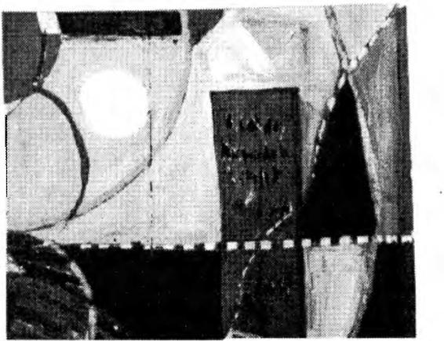
BİRLİKTE GÖRMEK
L os An
yorgu geles ' a
nluktur dönüşümü
ya da ani izleyen
bir nefes bir
darl kaç ha
ığıdır fta
diy boyunca
erek geçiştirdiğim bir rahatsızlık hissettim. Bu duygu, bir gece kan ter
içinde uyanıp kendimi nefes alamaz bir durumda bulduğumda artık dayanılmaz kerteye gelmişti. Gittiğim doktor, sorunumun gerginlikten kaynaklanan nefes darlığı olabileceğini söyledi. Sakinleştirici yazdı ve tekrarlanması durumunda bir
kesekağıdının içine nefes alıp vermemi salık verdi.
Meksika'ya geri dönüp la Gorda'nın önerilerine başvurmaya karar verdim. Ona doktorun teşhisini anlattığımda beni
sakin bir sesle yatıştırarak hasta filan olmadığımı, en sonunda kalkanımı yitirmeye başladığımı, yaşadığım deneyimin
"insan biçimimin yitimi" ve insani ilişkilerden uzaklaşma
sürecinin yeni bir aşamasına giriş olduğunu anlattı.
"Ona karşı koyma," dedi. "Doğal tepkimiz bu duyguyla
ıııüeadelc etmektir. Böyle yaparsak onu kendimizden uzakla�tırırız. Korkuyu bir kenara bırak ve insan biçim inin yiti-
38
ÖTEKİ BENLİK
mini adım adım izle."
Kendi deneyiminde, biçiminin çözülüşünün ilk kez rahminde derin bir acıyla başlayan ve yavaş yavaş bacaklarına
ve boğazına doğru iki yönde ilerleyen dayanılmaz bir baskı
şeklinde ortaya çıktığını anlattı. Bu etkilerin anında hissedildiğini de ekledi.
Bu yeni aşamaya geçişimin her ayrıntısını kaydetmek istiyordum. Kendimi olan bitenleri ayrıntılı bir biç imde yazmaya hazırlamıştım ama hiçbir gelişme olmaması bende tam bir düş kırıklığına yol açtı. Sonuçsuz geçen birkaç günlük
bekleyişten sonra, la Gorda' nın açıklamalarına güvenim kalmadı ve doktorun teşhisinin doğru olduğuna karar verdim.
Anlaşılabilir bir durumdu bu. Dayanılmaz bir gerilime yol
açan bir sorumluluk taşıyordum. Çömezlerin bana yakıştırdıkları liderliği kabul etmiştim, ama nasıl lider olunacağı konusunda hiçbir fikrim yoktu.
Üzerimdeki baskının daha ciddi sonuçları da ortaya çıkmıştı. Alışkın olduğum enerj i düzeyi giderek düşüyordu.
Don Juan olsa, kişisel erkimi yitirmekte olduğumu ve sonunda yaşamımı da yitireceğimi söylerdi. Kendisi beni, yalnızca
kişisel erkle yaşamak üzere yönlendirmişti. Anladığım kadarıyla bu, özneyle evren arasında, öznenin ölümüyle sona ermedikçe, b itmeyen bir ilişki biçimiydi. Beni bu durumdan kurtaracak bir çare bulamadığıma göre ecelimin geldiğine
karar verdim. Kapıldığım sonumun geldiği duygusu, diğer
çömezleri çileden çıkartıyordu. Hem rahatlamak hem de onl arı daha fazla sıkmamak için b irkaç günlüğüne onlardan
uzaklaşmaya karar verdim.
Geri döndüğümde onları, küçük kız kardeşlerin kapısının önünde beni beklermişcesine dikilirken buldum. Nestor
arabaya doğru koştu ve motoru durdurmamı bile beklemeden
Pablito 'nun kaçtığını söyledi. Dediğine göre ölmek için Tula
şehrine, atalarının yurduna gitm iş. Aklım başımdan gitti .
Kendimi suçlu hissediyordum.


BİRLİKTE GÖRMEK
39
La Gorda benim kadar üzülmemişti anlaşılan. Gülücükler saçıyor, duyduğu hoşnutluğu gizlemi yordu.
"Gebersin pezevenk," dedi. "Bundan böyle hep birlikte,
uyum içinde yaşayacağız, olması gerektiği gibi. N agual bize
senin yaşantımıza değişiklik getireceğini söylemişti, getirdin
de. Pablito artık bizi rahatsız etmiyor. Kurtuldun ondan. Onsuz her şey daha iyi. B ak, nasıl da mutluyuz. "
Onun bu duygusuzluğu beni çok kızdırmıştı. Olabildi
ğ ince sert bir dille, don Juan ' ın hepimize bir savaşçının ya
şam biçim inin nasıl olması gerektiğini büyük bir özenle tanımladığını söyledim. Pablito ' yu bu şekilde ölüme terk etmenin savaşçı kusursuzluğuna uygun düşmeyeceğini vurguladım.
"Ne yapabilirsin ki?" diye sordu la Gorda.
"Aranızdan birini onunla birlikte yaşaması içın gotureceğim," dedim, "ta ki Pablito da dahil olmak üzere, hepiniz
buradan taşınabilinceye dek."
B ana güldüler, Pablito'ya daha yak ı n oldukl arını sandı
ğım Nestor ve Benigno bile. En çok gülen la Gorda oldu,
sanki bana meydan okuyordu.
Dönüp, beni desteklemelerini umduğum Nestor ve Benigno 'ya baktım, onlar da bana sırt çevirdiler.
La Gorda'dan sağduyulu olmasını istedim. Ona yalvardım. Aklıma gelen her şeyi sıraladım. Aşağılayarak bakıyordu bana.
"Haydi gidelim," c.iedi ötekilere.
B ana anlamsızca gülümsedi. Omuzl arını s ilkti ve dudaklarını belli belirsiz bir biçimde büzdü. "Bizimle gelebil irsin,"
dedi sonra, "Soru sormayacağına ve o aşağılık pezevenk
hakkında konuşmayacağına söz verirsen."
"Sen biçimsiz bir savaşçısın la Gorda," ded im . ''Bunu
kendin söylemi ştin bana. Öyleyse neden Pabl ito ' yu acımasızca eleştiriyorsun?"
La Gorda yanıt vermedi . Ancak, sözlerim onu etk ilemiş-
40
ÖTEKİ BENLİ K
t i . Kaşlarını çattı v e gözlerini kaçırdı.
"La Gorda bizimle birlikte ! " diye bağırdı Joscfina yüksek perdeden bir sesle.
Küçük kız kardeşler la Gorda'nın çevresini sardı lar ve
onu eve doğru sürüklediler. Peşlerinden gittim. Nestor ve
Ben igno da içeri girdiler.
"Ne yapacaksın, bizi zorla mı götüreceksin oraya?" diye
sordu la Gorda.
Pablito' ya yardım etmeyi bir görev olarak gördüğümü
ve aynı şeyi herhangi biri için de yapabileceğimi söyledim.
"Gerçekten bu işi başaracağını sanıyor musun?" diye
sordu la Gorda. Gözleri öfkeyle parlıyordu.
Esk iden olduğu gibi öfkeyle bağırıp ç ağırmak geldi
içimden. Ancak bu kez koşullar farkl ıydı. Bunu yapama;:dıın.
"Josefina'yı götüreceğim," dedim. "Nagual benim.''
La Gorda küyi.ik kız kardeşleri etrafında topladı ve gövdesini onlara siper etti. El ele tutuşmak üzereydiler. İçimden
bir ses, el ele tutuşacak olurlarsa, aralarında oluşacak güçbirliğinin çok büyük olacağını ve Josefina'yı yanımda götürme
çabamın sonuçsuz kalacağını söylüyordu. Tek şansım, onlara
bir araya gelme fırsatını vermeden darbeyi indirmekti. Avucumun içiyleJosefina'yı ittim, odanın ortasına doğru sendeledi. Yeniden bir araya gelmelerine fırsat vem1eden, Lydia ve Rosa' ya vurdum. Acıyla kıvranmaya başladılar. La Gorda, o
güne kadar görmediğim bir öfke iç inde üzerime yürüdü.
Vahşi bir hayvanın saldırısına uğramı ş gibiydim . Tüm dikkati, bedeninin tek bir hamlesi üzerinde yoğunlaşırnş gibiydi.
O anda bana vursaydı, ölürdüm. Yumruğu bedenimi bir kaç
santim arayla ı skaladı . Arkasından sarılarak onu kavradım,
birlikte yere yıkıldık. İyice nefessiz kalıncaya kadar yerde
defalarca yuvarlandık. Bedeni gevşedi, midesin in üzerinde
sıkı sıkıya kenetlenmiş bulunan ellerimin arkasını okşamaya
başladı.
BiRLiKTE GÖRMEK
4 1
O anda Nestor ve B en igno ' nun kapının önünde durdukl arını gördüm . Her i k i s i de handıysa düşüp bay ı l acakmış gibi
görünüyorl ard ı .
La Gord a utangaç b i r şeki lde g ü l ümsedi v e k u l ağ ı m a
onu a l t ettiğime memnun olduğunu fıs ı l dadı .
Josefina ' y ı Pablito 'nun yanma götürdüm. Onun, tüm çömezler arasında, birisinin i lgisine gerçekten gereksinim d uyan tek kişi olduğunu ve Pabl ito ' nun da en az içerlediği k i msenin o olduğunu hissediyordum. İç i ndeki şövalye l ik duygusunun Pab li to ' yu ona yak laşmaya zorlayacağını, çünkü Josefin a ' n ı n onun yard ı m ı na gerçekten gerek s i n i m duyacağını düşünüyordum.
Bir ay sonra, Meks ika ' ya geri döndüm . Pabl ito ve Joscfina dönmüş lerd i . B irlikte don Genaro ' nun ev inde oturuyorl ar, e v i B e n i g no ve R o s a ' y l a pa_\r l a ş ı y or l a rd ı . N e s to r ' l a Lydia, Soledad ' ın evine yerleşm i ş lerd i , l a Gorda' ysa, küçük
kız kardeşlerin ev inde tek başına o turu yordu.
"'Ye n i yaşam düzen imiz seni ş aş ı rttı m ı '?" d i ye sordu l a
Gorda.
Şaşkın l ı ğ ı m ı g izleyemedi m . Bu ye n i düzenlemenin ne
anlama geldiğini t üm ayrı n t ı ları yla öğrenmek i st iyordum.
La Gorda, kuru bir sesle, bildiği kadarıyla bunun herhangi bir anlamı ol madığın ı söyledi. Ç i ftler hal inde yaşıyorlar ama karı-koca gibi davranmıyorlardı. Ayrıca, tahm inimin aksine, kusursuz birer savaşçı oldukların ı d a ekledi.
Bu yeni biçim bana oldukça sevim l i gel d i . Herkes alab i l d i ğ i n e rahat görünüyordu . A ralarında bir dalaşma y a d a
çekişme y o k t u . K ı z ı l deril ilerin yere l giysileri i ç i ndeyd i l er.
K ad ı n ların neredeyse yerleri süpüre n bol etekleri v ardı . Koyu renk şal lara bürünmüş lerd i ve sürekl i şapka g i ye n Josefina dışında hepsi saçların ı örmüştü. Adamlar ince beyaz kumaştan p ijamayı andıra n pantolonlar, gömlekler ve lıasır şapkalar g iy m i ş l e rd i . H e p s i n i n ayağ ı n da el y a p ı m ı s andal l ar vard ı .
42
ÖTEKİ BENLİK
r La Gorda'ya bu yeni giyim tarzının nedenini sordum.
Bana gitmeye hazırlandıklarını söyledi. Ya benim yardımımla, ya da kendi kendilerine, eninde sonunda bu vadiyi terk
edip, yeni bir dünyaya, yeni bir yaşama doğru yol alacaklarmış. Bunu gerçekleştirebildiklerinde, değişimi kabul etmiş;
Kızılderili giysileriyle de, kentli giysileri içindeki yaşamlarından daha belirgin biçimde uzaklaşmış olacaklarmış. Kendilerine içinde bulundukları durum ne olursa olsun akışkan ve rahat olmal arı gerektiğinin öğretildiğini ve bana öğretilenlerin de bunların aynısı olduğunu söyledi. Benden beklenen, ne yaparlarsa yapsınlar, onlarla ilişkilerimde rahat oı-·
mammış. Buna karşılık onlardan beklenen de vadilerini terk
etmeleri ve savaşçılar gibi akışkan olup olamayacaklarını anlamak için de bir başka bölgeye yerleşmeleriymiş. -�
La Gorda'dan başarma şansımız konusundaki görüşünü
dosdoğru açıklamasını istedim. Hepimizin alnında başarısızlık yazılı olduğunu söyledi.
Sonra birdenbire konuyu değiştirdi ve rüyasında kendini
devasa iki dağın arasında uzanan dar bir geçitte gördüğünü
söyledi; bu dağların ona oldukça tanıdık göründüğünü düşünüyordu ve benden kendisini yakındaki bir kente götürmemi
istiyordu. Nedenini bilmemekle birlikte, o iki dağın orada
bulunduğuna ve rüyadan aldığı mesajın, birlikte oraya gitmemizi gerektirdiğine inanıyordu.
Ş afakla birlikte yola çıktık. O kentten daha önce de geçmiştim. Oldukça küçük bir yerdi ve çevresinde la Gorda'nın
görsüsüne uzaktan yakından benzeyen bir şey fark etmemiştim. Çevrede sadece kel tepeler bulunuyordu. Öyle görünüyordu ki, sözünü ettiği o iki tepe orada değildi, orada olsalar bile onları bulamayacaktık.
Bununla birlikte, şehirde geçirdiğimiz iki saat süresince
ikimiz de tanımlayamadığımız bir duyguya kapıldık; kimi
zaman iyice belirginleşen ama daha sonra yeniden karanlıklara gömülen, zihnimizde yalnızca büyük sıkıntı ve düş kı-

BiRLİKTE GÖRMEK
43
rıklığı yaratan bir bilinmezlik duygusu. O kente gitmek bizi
gizemli bir biçimde huzursuz etmişti; daha doğrusu, bilemediğimiz nedenlerden dolayı, yoğun bir tedirginliğe kapılmıştık. Hayatta akl ıma gelmeyecek, saçmasapan bir çelişk iye düşmüştüm. Bugüne dek o kentte durduğumu bile anımsamıyordum, şimdiyse, yalnızca orada bulunduğuma değil, aynı
zamanda bir süre yaşamış olduğuma da yemin edebilirdim.
Silik bir anıydı; şehrin sokaklarını ya ela evlerini anımsaın ıyorclum. Duyumsadığım, zihnimde bir şeylerin açı k seçik
canlanacağına ilişkin belli beli rsiz, ama güçlü bir seziycli.
Bunun ne olduğundan emin değildim, bir arıı olabil irdi. Bu
sezi , giderek yoğunlaştı, özell ikle bir evi gördüğüm an. Evin
önünde durdum. La Gorda 'yla birlikte evi arabanın içinden
belki bir saat izledik, yine de, arabadan dışarı çıkıp eve girmek konusunda ikimizden de herhangi bir öneri gelmedi.
İkimiz ele son derece huzursuzduk. La Gorda 'nı n o iki
dağla ilgili görsüsü üzerine konuşıııaya başladık; kısa süre
içinde ele konuşmamız tartışmaya dönüştü. Benim rii_m.1 1111
c iddiye almadığımı clüşi.ini.iyorclu. Sonunda tepem iz attı ve
birbirimize bağırıp çağırmaya başladık; kızgınlıktan değildi
bu, sinirlerimiz bozulmuştu. Ben kendime hakim olup bağırmayı kestim.
Dönüşte arabayı toprak yolun kenarında clurclurclum. Bacaklarımızın açılması için ufak bir yürüyüşe çıktık. Bir süre
yürüdük; hava oldukça rüzgarl ıydı. La Gorcla hala tedirgin
gorünüyordu. Arabaya geri döndük ve içercle oturduk.
"Bilgilerini toparlayabilsen," dedi la Gorcla yalvaran bir
sesle. "Anlayacaksın insan biçiminin yitiminin ... "
Cümlenin ortasında sustu ; kaşlarımın çatıldığı nı görünce
kısa kesmesi gerektiğini düşünmüş olmal ıydı. Yaşadığım çel işkinin farkındaydı . Zihnimde bilinç! i olarak toparlayabileceğim bilgiler bulunsaydı, bunu o ana kadar başarabilmiş
olurdum zaten.
"Ancak bizler saydam varlıkları z , " dedi aynı yalvaran
sesle. "Görünürde sahip olduklarımızdan çok daha fazlasına
44
ÖTEKİ BENLİK
sahibiz. Sen Nagual 'sın. Sen daha da fazlasına sahipsin. "
"Sence n e yapmam gerekiyor?"
L "Nesnelere sımsıkı sarılma arzundan kurtulmal ısın," dedi. "Bende de aynı şeyler olmuştu. Örneğin, sevdiğim yiyeceklere, yaşadığım yerdeki dağlara, konuşmaktan zevk aldı
ğım insanlara sıkı sıkıya sarılmıştım. En çok da beğenilme
arzusuna.')
Ona bu öğütlerinin benim için anlam taşımadığını, çünkü bildiğim kadarıyla hiçbir şeye sıkı sıkıya sarılmadığımı
söyledim. Israrla, insan biçimimi yitirmemek için bir şekilde
araya engeller koyduğumu bildiğimi söyledi.
"Dikkatimiz, sabırlı bir biçimde yoğunlaşmak üzere eğitilmiştir," diye sürdürdü konuşmasını. "Dünyada varlığımızı
sürdürebilmemizin yolu budur. B irinci dikkatine, bana oldukça yabancı gelen, ama senin çok iyi bildiğin bir şey üzerinde yoğunlaşmak öğretilmiş.
Ona zihnimin soyutlamalar yol uyla işlediğini söyledim-bunlar, matematiksel soyutlamalar değil, daha çok ussal önermeler biçimindeydi.
L "Şimdi, kendini tüm bunlardan kurtarmanın zamanı ,"
dedi. "İnsan biçimini yitirebilmek için tüm bunlardan kurtulman gerekiyor. Öylesine güçlü bir direnç oluşturuyorsun ki
sonunda halin kalmıyor. " J
Onunla tartışabilecek durumda değildim. Onun insan bi
çimini y itirmek adını verdiği süreç, şu an için kafamın almayacağı kadar belirsizdi. Kafam, o kentte yaşadıklarımıza takılmıştı. La Gorda'ysa bu konuda konuşmak istemiyordu. '
"Öneml i olan senin bilgilerini toparlayabilmendir," dedi.
"Gerçekten yapmak zorunda olsan bunu becerebilirsin. Örneğin Pablito'nun kaçtığı ve seninle yumruk yumruğa geldi
ğimiz o gün olduğu gibi."
La Gorda o gün olanların "kişinin bilgisini toparlaması"nın bir örneği olduğunu belirtti. Tam olarak farkında olmadan görme gerektiren kannaşık bazı manevralar yapmıştım.
BiRLiKTE GÖRMEK
45
"O gün bize saldırmakla kalmadın, " dedi. "Giirdiin de."
Doğruyu söylemek gereki rse , h ak l ı y d ı . O gün olup bitenlerde bir gariplik vard ı . Olayı en ince ayrı ntısına kadar
düşünmüştüm, neler olduğunu kendime bir türlü açı k l ayamamıştım. Yaşanan anın duygusal yükünün ben i i nanılmaz bir
biç imde etkilemiş o l m a s ı d ı ş ı nd a , olayla i lg i l i yete r l i b i r
açıklama bulamıyordum.
Evlerinden içeri girip dört kadınl a karşı karşıya geldiğim
an, olağan alg ı l ama biçimimi değiştirebildiğimi fark etm i ştim. Önümde koyu kehribar renk l i , biçimsiz dört baloncuk
görmüştüm. Bunlardan birinin ren g i daha açıktı ve daha cana
yakın görünüyordu. Diğer üçü ise h asmane, kes k i n , beyazımsı kehribar renkli kızıllıklardı . Tatl ı renkl i k ızıl l ı k la G ord a ' y d ı . Ü ç hasmanc k ızı l l ı k da, tehdit edici biçimde onun çevresinde dolaşıyordu.
En yakınımda bulunan beyazımsı saydamlık, k i hu Josefin a ' yd ı , b i raz denges i n i y i t i rm iş d u ru mdaydı . Ö ne doğru
eğilmişti, onu ş iddetle itmiştim. D i ğer i k i s i n i n içeri doğru
eğilmiş bulu nan sağ yanlarına b i r tekme atm ı ş t ı m . Onları n
b u kısımlarını tekmelemek konusunda b i l inçli b i r düşünceye
sahip değildim. Yaln ızca bu girintiyi u ygun bir nokta olarak
görmüştüm-bir şeki lde sanki ayağımı oraya ycrlqtirnıcın
için ben i davet ediyor gibiydile r. Somıç tam isabetti . Lyd i a
ve Rosa o a n bay ı ldılar. Her ikisini d e sağ uylukl arından tek
ınelemiştim. B u , kemiklerin i kırabi lecek türde bir darhe de
ğ i l di, yalnızca önümdeki ı ş ı k baloncukları n ı ayağım l a itmiştim. Yine de i nd irdiğim darbe, sanki bedenlerinin en kolay
incinen bölümlerine ş iddetli bir tekme atm ışım gibi bir etki
yaratm ıştı .
La Gorda hakl ıydı, farkında olmadığım bazı bilgileri toparlayab ilmiştim. Eğer görmek b u ysa, ussal yönden vard ı
ğım somıç şuydu k i , görmek bedensel bir b ilgid ir. Zihıı inı izde görsel duyuımın başatlık kazanmas ı , bu bedensel b i l g i y i
etkiler v e o n u n göze i l i şk i n bir d u y u m olarak ortaya ç ı km as ı na neden olur. B e n i m deney imled i ğim, s a l t görsel değ i l d i .

46
ÖTEKİ BENLİK
Işık baloncuklarını, gözlerimin yanı sıra bir diğer duyumla
daha görmüştüm, çünkü onlarla uğraştığım tüm süre boyunca dört kadını da görüyordum. Işık baloncukları bedenleriyle
yan yana da durmuyordu. B irbirlerinden ayrıktılar. Benim
için konuyu daha da karmaşık kılan, olayın zaman boyutuydu. Tüm olan bitenler, birkaç saniye içinde gerçekleşmişti.
Eğer olduysa, bir anlık görüntüden diğerine sıçrayışım yok
sayılacak bir hızla olmuş olmalıydı. Bu nedenle, ancak eşzamanlı iki farklı görüntüyü algıladığımı anımsıyordum.
İki ışık baloncuğunu tekmeledikten sonra tatlı renkl i
ışık-la Gorda-bana doğru yaklaşmıştı. Üzerime gelmemişti, sol yanıma doğru i lerlemişti; amacının bana vurmak
olmadığı anlaşılıyordu. Bu nedenle, parıltı yanımdan geçer
geçmez onu yakalamıştım. B irlikte yerlerde yuvarlandıkça,
onun içinde eridiğimi h issetmiştim. Zaman duygusunu ger
çek anlamda yitirdiğim tek an da, o an olmuştu. La Gorda ellerimin arkasına sarıldığında yeniden kendime geliyordum .
"Rüyamızda, küçük kız kardeşlerle el ele tutuşmayı öğrendik," dedi la Gorda. "El ele bir hat oluşturmayı biliyoruz.
O günkü sorunumuz, o hattı odamızın dışında hiçbir yerde
oluşturmamış olmamızdan kaynaklanıyordu. B u yüzden beni
içeri sürüklediler. Senin bedenin, el ele tutuşmamızın bizler
için ne anlama geldiğini biliyordu. Eğer bunu başarsaydık,
onların denetimine girecektim. Onlar benden daha vahşidirler. Bedenleri sıkı sıkıya kenetlenmiştir; cinsellik onları ilgilendirmez. Oysa beni ilgilendiriyor. Bu da beni daha güçsüz kılıyor. Eminim, senin de bilgini toparlayabilmeni bu denli
güç kılan şey, cinselliğe duyduğun ilgi."
Cinselliğin insanı güçten düşürücü etkilerini anlatmayı
sürdürdü. R ahatsız olmuştum. Konuyu değiştirmeye çalıştım, ama tedirginliğime aldırmadan bu konuya geri dönmeye
kararlı görünüyordu.
"Haydi birlikte Mexico City ' e g idelim," dedim umutsuzca.
Onu şaşırtacağımı sanm ıştım. Yanıt vermedi . Dudakları-
BİRLiKTE GÖRMEK
47
nı büzdü, gözlerini kıstı. Çenesindeki adaleleri sıktı, dudaklarını burnunun altında toplayacak biç imde büzdü. Yüzünü
öyles ine çarpıttı ki, hayrete düşüim. Şa�kınlığım karşısı nda
ifadesini değiştirdi yüzündeki adaleleri gevşetti.
"Haydi, Gorda," dedim. "Mexico City ' e gidelim . "
"Elbette, neden olmasın'?" dedi. " N e alımım gerekiyor
yanıma?"
Ondan bu tepkiyi beklemiyordum, Ş<q ırma sırası bana
gelm işti.
"H içbir şey," dedim. "Olduğumuz gibi gideceğiz."
Tek bir söz daha etmeden arkasına yaslandı ve Mexico
City 'e doğru yola koyulduk. Vakit hata erkendi, henüz öğlen
bile olmamıştı. Ona benimle birlikte Los A ngcles 'e gelmeye
cesaretinin olup olmadığını sordum. 8 i r an için daldı.
"Bu soruyu saydam bedenime sordum," dedi.
"Ne dedi?"
"Ancak erk izin verirse gidebil irmişim."
Sesinde öylesine bir duygu yoğunluğlı vardı ki, arabayı
durdurdum ve ona sarıldım. O an ona duyduğum sevgi öylesine derindi ki, beni ürkütüyordu. Bunun c insellikle ya da
ruhsal desteğe duyulan gereksinimle bir ilgisi yoktu; bu duygu, bildiğim her şeyin ötesindeydi.
La Gorda'ya sarılmak daha önce de hissettiğim duyguyu
tekrar uyandırdı içimde, susturduğum, bilinçaltımın derinliklerine ittiğim birtakım şeylerin gün ışığrna çıkmasın a ramak
kalmıştı. B unun ne olduğunu anlamak üzereydim, ama tekrar
yitti.
La Gorda' yle birlikte Oaxaca kentine vardığımızda henüz akşam olmuştu. Arabamı ara sokaklardan birine park ettim ve birlikte kent merkezindeki meydana doğru yürüdük.
Don Juan 'la don Genaro'nun oturdukları bankı bulduk. B oştu. Saygılı bir sessizlik içinde orada oturduk. Sessizliği bozan la Gorda, buraya birçok kez don Juan ve kim olduğunu
48
ÖTEKİ BENLİK
anımsayamadığı bir başkasıyla geldiğini söyledi. Bunun yalnızca rüyasında gördüğü bir şey olup olmadığından emin de
ğildi.
"Don Juan'la birlikte bu bankta ne yaptınız?" diye sordum.
"Hiçbir şey. Oturduk ve otobüsü ya da bizi alıp dağların
tepesine götürecek olan kereste kamyonunu bekledik," dedi.
Ona, don Juan' la bu bankta oturduğumuzda saaatler süren konuşmalara daldığımızı söyledim.
Don Juan'ın şiire duyduğu büyük sevgiden ve boş oldu
ğumuz zamanlarda ona nasıl şiir okuduğumdan söz ettim. Şiirleri en fazla ikinci bölümüne kadar, o da beğenirse, dinlerdi; kalan bölümleriyse şairin esrikliği olarak yorumlardı.
Ona okumuş olduğum yüzlerce şiirden ancak birkaçını ba
şından sonuna değin dinlemişti. Başlarda ona kendi hoşlandıklarımı okuyordum; tercihim soyut, kapalı, düşünsel şiirlerdi. Daha sonraları, kendi beğendiği ş iirleri bana defalarca okuttu. Onun düşüncesine göre şiir kısa ve öz olmalıydı. Ulu
bir yalınlığın kesin, dokunaklı imgelerinden oluşmalıydı.
Akşamüstü , Oaxaca 'daki o banka oturduğumuzda don
Juan'da her zaman özel bir tutkuyu canlandıran Cesar Vallejo'nun bir şiirini ezbere la Gorda'ya okudum; bunu onun için
değil, kendim için yapmıştım.
Ne yapıyor bu saatte acaba
And dağlarından sevdiceğim Rita
kamışların ve vahşi kiraz ağaçlarının güzeli.
Boğuyor bu yorgunluk beni artık ve kanım uyuşuyor içimdeki
miskin içki gibi.
Ne yapıyor acaba o güzelim elleriyle pişmanlık içinde,
bem beyaz kolalı çamaşırların üzerinde gezinirdi ütüsü,
öğleden sonraları.
Yağan bu yağmur içimden sözlerimi sürdünne arzusunu alıyor.

BİRÜKTE GÖRMEK
49
Ne oldu acaba dantelli eteğine;
i şine gücüne; yürüyüşüne;
p ınarından yaydığı şekerkamışı kokusuna.
K ap ıdadır şimdi,
bakıyordur hızla i lerleyen bir buluta
K i remit damın üzerinde vahşi bir kuş ötecektir;
ve o, i ç i t itreyerek fısıldayacaktır sonunda, ' Tanrım ne kadar
soğuk ' '
Don J u an ' ı n anıs ı inanılmayacak k adar can l ı yd ı . Bir dü
şünce ya da bir h i s değ i l d i bu. B u , ne olduğu b i l inmez an ı,
ağlattı beni . Gözlerimden yaşlar boşanıyor, bir türlü dindirem iyordum.
İ k indini n son saati don Juan için her zaman büyük önem
taşırd ı . Onun bu saate duyduğu saygı y ı ve eğer bana öneml i
b ir şey olacaksa, bunun günün o zamanında olacağına duyduğu inancı ben de benimsemiştim.
La Garda, başını omzuma yaslad ı . Ben de başımı onun
başına. B ir süre öylece kaldık. Rahatlam ıştım; d uyduğum tedirg inlik geçmi ş t i . Yalnızca baş ı m ı la Gord a ' n ı n başına yaslamamın bana böy l e s i ne h u zu r veriyor olması şaşırtıcıydı.
Ona, şaka olsun diye, başlarımızı b irbirine bağl amamız gerek t i ğ i n i söyleyecektim ama bu söylediğin1 İ ciddiye alacağın ı anladım. Tüm beden i m gülmekten sarsıldı ve uykuda olduğumu ayrım s ad ı m , ama gözlerim aç ıktı; eğer gerçekten isteseyd i m , ayağa k a l k ab i l i r d i m . K ı m ı ldamak i s temediğ i m için orada öylece durdum ; tam anlam ı y l a u yanıktım, aynı zamanda da uykuda. Çevrede yürüyen ve b ize bakan insanları
gördüm , Genelde benimle ilgilenilme s i nden hoşlanmadığım
halde, onlara zerre kadar aldırm ıyordu m . Sonra insanlar bir
anda beyaz ı ş ı k tan kocaman köpüklere dönüştüler. Yaşam ımda ilk kez saydam yumurtalarla gerçek anlamda ve doğrudan
k arş ı l aşmıştım ! Don Juan i nsanların görücülere saydam yu
ımı rtalar b i ç i m inde göründüklerini söylem i ş t i . B u algıyı, b i r
50
ÖTEKİ BENLİK
an için yanıp sönen ışıltılar olarak deneyimlemiştim ama
hiçbir zaman bakışlarımı, o gün yaptığım gibi, onlar üzerinde odaklayamamıştım.
Işık kabarcıkları önceleri oldukça şekilsizdi . Gözlerim
bunların üzerinde yeterince odaklanamamış gibiydi. Fakat
daha sonra, bir anda görüş gücümü en sonunda doğru biçimde ayarlamayı başarabildim ve beyaz ı şık kabarcıkları uzunca saydam yumurtalar şeklini aldılar. Büyüktüler, aslında devasa sayılırlardı, iki metreden uzun, bir buçuk metreden geniş olmalıydılar, belki de daha fazla.
Bir an yumurtaların artık h areket etmediklerini fark ettim. Önümde saydam, yoğun bir kütle gördüm. Yumurtalar
beni izliyorlar; tehditkar biçimde karşıma diziliyorlardı. Ağır
ağır doğrularak dik oturdum. La Gorda omzuma yaslanrrıış,
derin bir uykuya dalmıştı. Çevremizde bir grup genç vardı.
Sarhoş olduğumuzu sanmışlardı herhalde. B izi taklit ediyorlardı. İçlerinde en cüretkar olanı, la Gorda'nın göğüslerine
dokunmaya başlamıştı. Onu sarsarak uyandırdım. Telaşla yerimizden kalktık ve orayı terk ettik. Gençler peşimize takıldılar, bizimle dalga geçiyorlar, bağırarak açık saçık şeyler söylüyorlardı. Köşede beliren polisi görünce bizi rahatsız etmekten vazgeçtiler. Tam bir sessizlik içinde kent merkezinden arabayı bıraktığım yere doğru yürüdük. Akşam olmak üzereydi. B irdenbire la Gorda koluma yapıştı. Gözlerinde
vahşi bir ifade vardı, ağzı açıktı. Eliyle işaret etti.
"Bak ! Bak ! " diye bağırdı. Nagual ve Genaro, oradalar ! "
Önümüzdeki uzun bloğun köşesinden iki adamın döndü
ğünü gördüm. La Gorda hızla o yöne doğru koşmaya başladı. Peşinden koşarken gördüklerinden emin olup olmadığını
sordum. Kendinde değildi. Kafasını kaldırıp baktığında, don
Juan ve Genaro' yu onu seyrederken gördüğünü söyledi. Göz
göze geldikleri an, yürüyerek uzaklaşmışlardı.
Köşeye ulaştığımızda, iki adam bizden yine aynı uzakl ıkta duruyorlardı . Y üz hatlarını ayırt edemiyordum. Orada
yaşayan Meksikalı l ar gibi giyinmişlerdi. B aşlarında hasır
BİRLİKTE GÖRMt'K
5 1
şapka vard ı . B iri, don Juan gibi iri yarı , d i ğeri ele Genaro gib i zayıf yap ı l ıydı . İki adam bir başka köşeyi döndü ler, biz de
bağıra çağıra peşlerinden seğ irtt i k . G i rd i kleri sokak ı s s ı zdı ,
hafifçe sola doğru k ı v rı l ıyor ve şehrin kenar mahallelerine
çıkıyordu . İki adam tam yolu n k ı vrıldığı noktadaydıl ar. İ şte
o anda öyle bir şey oldu ki o adamları n gerçekten don J u an
ile Genaro olabi lecek leri düşünces i ne kapı l d ı m . Adam l ardan
daha kısa boylusunun bir h areketiydi bunu düşündüren. Profilinin dörtte üçünü göreb i leceğ i m iz biç imde bize doğru döndü ve onları izlemem izi ist iyorımışcasın a ha fifçe baş m ı eğd i .
Don Genaro ' nu n ormanda dolaştı ğ ı m ı z günlerde bana s ı k s ı k
yaptığı bir h areketti b u . Her zaınan benim önümde yü rür, bana cesaret vermek, ona yetişebilmem konusunda beni i k n a
etmek istercesine dönüp baş ı y l a b u hareket i yapard ı .
La Gorc\a avazı çıktığı kadar bağırmaya baş ladı . "Nagual ! Genaro ! B ekleyin 1 "
La Gorda önümden koşuyordu . Adam l ar i leride, alacakaranl ı kta k ı smen görülebilen barakal ara doğru çok h ı z l ı b i r
biçimde yürüyorlard ı . Ya bu barakalarcLın b i rine girı ıı i ş ya ela
civarda çok sayıda bulunan pat ikalardan b i rine yöne l m i ş olmalıl ard ı ; b irdebire gözden kaybo ldul ar.
La Gorda orada d u rdu ve h i ç çeki nmeden . i n l e re-e s i ne
adları nı haykı rdı . Çevredekiler kimin bağırd ı ğ ı nı görebi lmek
i�' i n dışarı fırladıl ar. Sakinlqinceye dek .�arı l d ı m ona.
"Tam önüııı deyd i ler," dedi ağlayarak . "Otuz metre bile
yoktu aranı ızda. Dikkatini onl ara çekebilmek iç i n sana seslendiğ imde bir blok ötemizde bir an için durdu lar. "
O n u yat ı ş t ı rm aya çalı ştı m . Çok gergindi . Titreyerek bana sarı ldı. N ede n i n i b i lm iyordum ama, o iki adamın don J uan ve don Geııaro olmadıklarından kes i n l ik le e m i n d i m ; b u yüzden d e l a Gorda ' nı n heyecanın ı paylaşanı ıyorcl u nı . Eve
geri dönmemi z gerektiğini, erk i n ona benimle birl ikte deği l
Los Angele s ' a , Mex ico City ' ye b i l e gitmesine izin vermedi
ğini söyledi . Heni.iz böyle bir yolculuğun zamanı gelmem iş.
Onl arı görmenin de b i r yora olduğuna i nanı yordu . Ona, evle-
52
ÖTEKİ BENLİK
rinin bulunduğu yönü, doğuyu göstererek gözden kaybolmuşlardı .
O anda e n başa dönmeye herhangi b i r itirazım yoktu. O
gün içinde yaşadığımız tüm olaylardan sonra yorgunluktan
bitmiş olmam gerekirdi. Oysa, benliğimi alabildiğine yoğun
bir enerji dalgası kaplamıştı. Tıpkı don Juan' la birlikte oldu
ğumuz, içimden omuzlarımla duvarlara bindirip onları yıkmak geldiği günlerdeki gibi.
Arabaya doğru yürüdüğümüz sırada la Gorda'ya karşı
içimi bir kez daha tutkulu bir sevgi kapladı. Bana olan yardımları için ona ne denli teşekkür etsem azdı. O gün saydam
yumurtaları görmemi sağlamak için yaptığı her şeyde başarılı olduğunu düşünüyordum. O sırada oturmakla son derece
cesur davranmış, gülünç duruma düşmeyi, hatta bedensel incinmeleri bile göze almıştı. Ona m innettarlığımı ifade ctlinı.
Çıldırmışım gibi bana baktı ve bir kahkaka patlattı.
"Ben de aynı şeyleri senin için düşünmüştüm," dedi.
Tüm bunları yalnızca benim için yaptığını sanmıştım. Saydam yumurtaları ben de gördüm. Bu, benim için de ilk kez
olan bir şeydi. B irlikte gördük! N agual ve Genaro' nun yaptı
ğı gibi. "
L a Gorda' nın binmesi için arabanın kapısını açtığımda o
gün yaşadığımız deneyim tüm gücüyle etkisini gösterdi. O
ana kadar tümüyle duyarsızdım, içime bir ağırlık çökmüştü.
Şimdiyse, duyduğum coşku, la Gorda 'nın biraz önceki heyecanı kadar yoğundu. Sokaklarda koşmak ve bağırmak istiyordum. Yatıştırma sırası la Gorda'ya gelmişti. Yere çömeldi ve baldırlarım ı okşadı. Çok garip, hemen sakinleşmiştim.
Konuşmakta güçlük çektiğimi ayrımsadım. Düşüncelerim,
söze dökemeyeceğim bir h ızla akıyordu zihnimde. Evinin
bulunduğu kente hemen dönmek istemiyordum. Yapacak daha çok şey varmış gibi geliyordu. Yine de, ne istediğimi tam
olarak açıklayamıyordum. Oldukça isteksiz olan la Gorda' yı
kent merkezine doğru sürükleyerek götürdüm, ama o saatte
oralarda boş bank yoktu. Çok acıkmış olduğumdan, onu bir
BİRLİKTE GÖRMEK
5 3
restorana doğru çek t i m . B i r şey y iyemeyeceği n i sanıyordu
ama garson y iyecekleri geti rdiğinde benim kadar acıkm ış olduğunu anladı . Yemek bizi tümüyle rah atlatmıştı .
O gece d aha geç bir saatte gidip bankta oturduk. Oraya
oturabilene dek bize olanlar konusunda ona herhangi b i r şey
söylemekten k açındım. La Gord a ba�larda konuşmak istemiyordu . Benl i ğ i m a l ı ş ı l m ad ı k bir coşku içindeydi. Don J u an'la b i rlikte o l duğum zaman l arda d a b u n a benzer anlar ya
şamıştım, ama bunlar gene l l ikle sanrı landırı c ı b itkilerin etkisiyle ortaya çıkardı.
Sözlerime gördüklerimi l a Gord a ' ya anlatmakla başladım. O saydam yumurtaların beni en fazla etkileyen yanı dev i n imleriyd i . Yürümüyorlardı . yerde oldukları halele yüzercesi ne cleviniyorlarclı . Devi n im leri hoş görünm üyordu. S ı rıkl a yürürmüşçesine, kazık gibi ve silkinerek i lerl i yorlard ı . Dev in i m halindeyken yumurta biçim leri ufalıyor, yuvarl aklaşıyordu; sıçrarcasın a, silkinircesine, hızla bir a�ağı b i r yukarı sall anıyorlard ı . Sonuçta yarattık ları etk i , son derece rahatsız
edici sinirsel bir ü rpermeycl i . Tel ev izyonclaki h ızlandın lmış
görüntülere benziyorlardı en çok.
Kafam ı karıştıran bir başka şey de bacaklarını n olmamasıydı. B i r zamanl ar dansçı l arın buz üzerinde askerlerin hareketlerini takl i t ettikleri bir bale gösteri s i izlem iştim; askerlere benzeyebilmek için yerlere kadar inen bol t ü n i k l e r g i ym işlerd i . Ayaklarını görebilmek olanaksızdı, bu nede n l e de buz üzerinde akıp gicl iyorımış g i b i b i r e t k i yaratıyorlard ı .
Önümden geçen saydam yumurtalar d a kaba yüzeyl i b i r zem i n üzerinde kayı yorm u ş g i b i b i r i z l e n i m b ı ra k ı yorlard ı .
S ayclamlıkları , bel l i bel i rsiz b i r aşağı b i r yukarı dev i n i yord u ,
ama bu bile b e n i rahatsız etmeye yet i yordu. Yu m urtaların
dev i nimleri yavaşladığında, biçimleri de uzuyordu. Bazıları
o denl i uzun ve k atı görünüyorl ardı ki, insanın aklına tahta
ikonaları getiriyorlard ı .
S aydam y u m urtaları n d a h a d a rah ats ız e d i c i b i r diğer
öze l l i ğ i de, h içbiri nde göz bulunmamasıydı . Can l ıl arı n göz-
54
ÖTEKİ BENLİK
lerininin bizleri böylesine çektiğinin o zamana dek ayırdına
varmamıştım. Saydam yumurtalar tümüyle canlıydılar ve beni büyük bir merakla gözlüyorlardı. İne çıka silkindiklerini,
yaklaşıp eğilerek beni seyrettiklerini görüyordum, ama gözleri yoktu.
Bu saydam yumurtaların çoğunun üzerinde, tam orta bölümlerinin altında siyah noktalar bulunuyordu. Bazılarındaysa yoktu bu büyük noktalar. La Gorda bana, üreme faaliyetinin erkeklerin ve kadınların bedenlerini etkilediğini ve bunun sonucunda m idenin hemen alt kısmında bir deliğin ortaya çıktığını söylemişti. Ancak bu saydam yumurtaların üzerindeki noktalar bana tam olarak birer delik gibi görünmemişti. Bu bölgeler saydam değildi ama derin de değildi. Üzerinde s iyah noktalar bulunan yumurtalar daha yaş l ı , daha yorgun görünüyorlardı; yumurta biçimlerinin üst kısımları
aşınmış gibiydi, gövdelerinin diğer bölümlerindeki parl akl ı kl a karşılaştırıldıklarında mat görünüyorlardı. Öte yandan,
üzerinde siyah noktalar bulunmayan yumurtalar, göz kama�tırıcı parlaklıktaydılar. Bunların tehlikeli oldukları dü�üncesine kapıldım. Canlı ve güçlüydüler, enerj i ve beyazlık yüklüydüler.
La Gorda bana, başımı onunkine yasl adığım an rüya
görmeyi andıran bir ruh durumuna girdiğini söyledi . Uyanı kmış ama yerinden kıpırdayam ıyormuş. İnsanların çevremizde dönüp durduklarının farkındaymış. Daha sonra bunların saydam baloncukl ara, en sonunda da yumurta biçimli yaratıklara dönüştüğünü görmüş. Benim de görüvor olduğumu
bilmiyormuş. İlk başta onu kolladığımı sanıyormu�, ama, ba
şımın yarattığı basınç çok artınca benim de görüyor olmam
gerektiğine kanaat getirmiş. Zihninde olup bitenler hakkında
ancak, toparlanıp, uyuyor görünmesinden yararlanarak onu
okşamaya çalışan adamı yakaladığım zaman bir fikir sahibi
olabilmiştim.
Görsülerim izin b irbirinden farkı, onun ''kökler" adını
verdiği, aslan kuyruğunu andıran ince telcikler aracılığıyla
BiRLiKTE GÖRMEK
55
erkeklerle kadınları b irbirinden ayı rabi lmesiyd i ; bunlar, c i nsel organ l arın b u l undukları böl geden içeriye doğru uzuyorlardı. Bu köklerin y aşamın kaynağı olduğunu söyledi. Cen in, büyümesi n i gerçekleştirebilmek amacıyla kendisini bu besleyici kökçüklerden birine bağlı yarak onu iyice emiyor, geride
yalnızca bir delik bırakıyormuş. Öte yandan, erkeklerin kısa,
incecik telcikleri varmış; bunlar canlıl arırnş ve bedenlerinin
saydam kütles inden bağımsız bir biçimde y üzi.i yorlarm ı ş .
Ona, bunları birl i k te görmemizin neden inin ne olabilece
ğ i n i sordum. Herhangi bir yoru m d a bu l u nmaktan kaçın d ı ,
ama tah m inlerimi s ü rdü rmem konusunda beni t q v i k e t t i .
A k l ı m a i l k geleni açıkça belirt t i m : B u işte duygul arı n rol ü
olab i lirdi.
Ayn ı gün akşamüstü, la Gord a ' y l a b i rl ikte don Juan ' ın
e n sevdiği bankta oturu p , onun sev d i ğ i ş i iri okudum. Çok
duygu l anmıştım. Duyguları m , böyle bir yoğunl uğa bedenimi
hazırlamış olmalıydı . Rii_va gr)rmeyle birl i kte tam bir sess izlik durumuna geçmeyi ele öğrenmişti m . Zihni m deki dinmek
bilmez konuşmal arı susturarak, tıpkı bir kozan ı n içi nden gizlice dışarıyı seyrediyormuş gibi kalab i l iyordu m . Böyle bir
durumda y a b i li n c im ü zerinde az da o l s a s a h i p o l d u ğu m
kontrol ü tümüyle b ı rakı yor v e b i r riiyaya d a l ı yor y a d a o
kontrolü si.irdüyor, edilgen, düşü ncelerden arınmış, arzul ardan sıyrılmış bir duruma geçiyordum. Bununla birlikte, bunların önemli birer etken olduğunu s anm ı yordum. B ence bu süreçte k atal izör işlevini la Gorda görüyord u . Giirnıek için
gerek l i koşu l l arı n gerçek leşme s i n e yol açan u n s u r u n , ona
olan duygu larımdan kaynaklandığına inanıyordum.
Düşünceleri m i ona söylediğimde, la Garda mahcup bir
biçimde güldü.
"Sana katılmıyorum," eled i . " Bence, bedenin anımsamaya başlad ı . "
' ' B ununla n e demek istiyorsun Gorda?" diye sordum.
Uzun bir sessizlik oldu. Ya söylemek i s temedi ğ i bir �eyi
söyleyebilmek için keneli kendisiyle mücadele ediyord u , ya
56
ÖTEKİ BENLİK
da umutsuzca doğru sözcükleri bulmak için uğraşıyordu.
"Bildiğim birçok şey var," dedi; "yine de neyi bildiğimi
bilemiyorum. O kadar çok şeyi anımsıyorum ki, sonuçta bir
bakıyorum, belleğimde hiçbir şey yok. Sanırım sen de aynı
açmazların içindesin."
Ona böyle bir şeyin farkında olmadığımdan emin olması
gerektiğini söyledim ama bana inanmak istemiyordu.
"B azen senin gerçekten bir şey bilmediğine inanıyorum," dedi. "Bazen de bizlerle dalga geçtiğini düşünüyorum.
Nagual bana kendisinin de bilmediğini söylerdi. Senin hakkında söylemiş olduğu birçok şeyi şimdi anımsamaya başlıyorum. "
"Bedenimin anımsamaya başlıyor olması ne demek?"
diye sordum ısrarla.
"Bunu bana sorma," dedi gülümseyerek. "Neyi anıınsaman gerektiğini ya da bu anımsamanın nasıl olduğunu bilemem. Ben şahsen böyle bir şeyi hiç yaşamadım. Bu kadarını biliyorum."
"Çömezler arasında bana bunu söyleyebilecek herhangi
biri var mı?"
"Hiç kimse yok," dedi. "Sanırım ben bir haberciyim, sana şu an ancak mesajın yarısını iletebilen bir haberci."
Ayağa kalktı ve onu evine götürmemi rica etti. O anda
bulunduğumuz yerden ayrılamayacak denli heyecanlıydım .
Önerim üzerine kent merkezinde gezindik. Sonunda başka
bir banka oturduk.
"Bu kadar rahatlıkla birlikle görebilmemiz sana garip
gelmiyor mu?" diye sordu.
Zihninden neler geçtiğini anlayamıyordum. Yanıl vermeden önce tereddüt ettim.
"Sana daha önce de birlikle gi)rdüğümüzü sandığımı
söylersem yanıtın ne olurdu?" diye sordu bu defa, sözcüklerini büyük bir özenle seçiyordu.
Ne demek istediğini kavrayamadım. Aynı soruyu bir kez

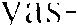
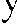

BİRLİKTE GÖRMFK
57
daha sordu. Yine anlayamamı şt ı m .
" N e z a m a n hirlikte görmüş olabi l i ri z '! " d i ye sord u m .
"Sorun hiçbir anl am i fade etmiyor. "
" İ�te mesele de bu," d iye yanıt verel i . " B ilnı iyonı m , ama
yine de içimde seninle hirli/.:.ıe giiıdii,�iimii:c dair bir his var.
An iden ü rperd i m ve ayağa kalktı m . B i r kez daha o kentte kap ı ldığım duyg u l arı anımsad ı m . Lı Gorda bir şeyler siiylcmck ü zere ağzı n ı açt ı , ama c ü m l e n i n y;ırı s ı n;ı gel meden sustu. Şas_., ı rm ı s� bir seki lde bana bak t ı , elini dudakları m a
.)
!adı , daha sonra ben i arabaya doğru s ü rükl eyerek götti rd ü .
Gece boyunca araba k u l l andım. Konuşmak, olanl a rı de
ğerlendirmek isti yordu m , ama o, sanki olası bir tart ı �mayı
önlemek isterce s i ne uykuya dal d ı . E l bette hak l ı yd ı . İ k i m i z
arasın da, bir ruh d urumunu gereğinden faz l a clcğerlcnd i rerek
dağ ı tmanın yol açacağı teh l i kenin farkı n d a olan oyd u .
Eve vardığ ı m ı zda arabadan inerken, Oaxaca ' d a başımıza gelenler konusunda h içbir şey söylemememiz gerektiğini
belirtt i .
" ' O d a neden, Gorda?" diye sord u m .
"Gücümüzü harcam amızı istem iyoru m , ' " d i y e yanıt v ereli. "Büyücünün yöntemidir bu : kazand ıkl arı ıı ı asla harcamayacak s ı n . "
"Ancak bunun hakk ı nda hiç konuşmazsak, bize gerçekte
neler olduğunu h içbir zaman bilemeyiz k i ." diye kar�ı �· ıktıın.
"En az dokuz gün ses siz olmam ı z gerekiyor." ded i .
''Yalnızca kenel i aram ızda bile konuşamaz m ı yız'!" d i ye
sordum.
"Öze l l ikle b u n u yapmama l ı y ı z . " ded i . Savunmasız durumday ı z . Kend imizi zamanın iyilqtiri c i g ü c ü ne bırakmamız gerekiyor. ,.
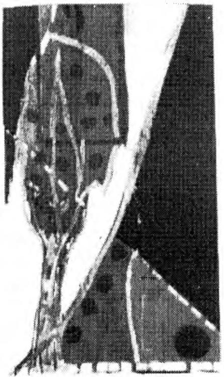
ÖTEKİ BENLİÔİN S ANKİ A !\ I L A R I
Aynı gece
duğunu hepim
söyler iz
m i yen